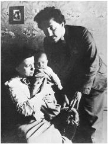
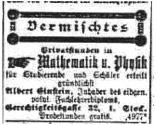
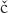

With Mileva and Hans Albert Einstein, 1904
Summer Vacation, 1900 1900年暑假
Newly graduated, carrying his Kirchhoff and other physics books, Einstein arrived at the end of July 1900 for his family’s summer vacation in Melchtal, a village nestled in the Swiss Alps between Lake Lucerne and the border with northern Italy. In tow was his “dreadful aunt,” Julia Koch. They were met at the train station by his mother and sister, who smothered him with kisses, and then all piled into a carriage for the ride up the mountain.
梅希塔尔（Melchtal）是一个位于瑞士卢塞恩湖和北意大利边境之间的小村庄，在阿尔卑斯山的群山掩映之下若隐若现。1900年7月底，爱因斯坦一毕业，就带着基尔霍夫等人的物理学著作前往梅希塔尔，与家人共度暑假。他那“可怕的舅妈”尤利亚·科赫与之同行。在火车站，爱因斯坦见到了妈妈和妹妹。她们的吻使他几乎透不过气来，之后大家乘马车上了山。
As they neared the hotel, Einstein and his sister got off to walk. Maja confided that she had not dared to discuss with their mother his relationship with Mileva Mari , known in the family as “the Dollie affair” after his nickname for her, and she asked him to “go easy on Mama.” It was not in Einstein’s nature, however, “to keep my big mouth shut,” as he later put it in his letter to Mari about the scene, nor was it in his nature to protect Mari’s feelings by sparing her all the dramatic details about what ensued.1
, known in the family as “the Dollie affair” after his nickname for her, and she asked him to “go easy on Mama.” It was not in Einstein’s nature, however, “to keep my big mouth shut,” as he later put it in his letter to Mari about the scene, nor was it in his nature to protect Mari’s feelings by sparing her all the dramatic details about what ensued.1
快到旅馆的时候，爱因斯坦和妹妹下车步行。玛雅悄悄对他说，自己不敢和妈妈谈论他与米列娃的关系。由于他称米列娃为“多莉”，所以家里称这件事为“多莉绯闻”。玛雅希望他能够“体谅妈妈”。然而，正如爱因斯坦后来给米列娃的信中所说，“要封上我的大嘴”不合乎他的天性，同样，他也不会为了让米列娃高兴而不向她透露一切戏剧性的细节。
He went to his mother’s room and, after hearing about his exams, she asked him, “So, what will become of your Dollie now?”
爱因斯坦走进了妈妈的房间。保莉妮先是了解了他的考试情况，然后问他：“你的多莉现在情况怎样？”
“My wife,” Einstein answered, trying to affect the same nonchalance that his mother had used in her question.
“是我的妻子。”爱因斯坦回答说，言语中带着妈妈问话时的那种冷漠。
His mother, Einstein recalled, “threw herself on the bed, buried her head in the pillow, and wept like a child.” She was finally able to regain her composure and proceeded to go on the attack. “You are ruining your future and destroying your opportunities,” she said. “No decent family will have her. If she gets pregnant you’ll really be in a mess.”
爱因斯坦后来回忆说，妈妈随后“一头扑倒在床上，将头埋到枕头里，如孩子一般抽泣起来”。平静了一些之后，她又继续同他理论。“你这是在自毁前程，”她说，“任何体面的家庭都不会答应要她。如果她怀孕了，你可就麻烦大了。”
At that point, it was Einstein’s turn to lose his composure. “I vehemently denied we had been living in sin,” he reported to Mari, “and scolded her roundly.”
这时，轮到爱因斯坦丧失理智了。“我绝不承认我们一直在非法同居，”他对米列娃说，“我狠狠地顶撞了她。”
Just as he was about to storm out, a friend of his mother’s came in, “a small, vivacious lady, an old hen of the most pleasant variety.” They promptly segued into the requisite small talk: about the weather, the new guests at the spa, the ill-mannered children. Then they went off to eat and play music.
正当他要怒气冲冲地离开时，妈妈的一个朋友走了进来。“这位太太身材娇小，活泼而有生气，是一个体态轻盈的老妇人。”她们随即寒暄起来，谈论天气，谈论最近来疗养的客人，调皮捣蛋的孩子，等等，然后一同去吃饭和演奏音乐。
Such periods of storm and calm alternated throughout the vacation. Every now and then, just when Einstein thought that the crisis had receded, his mother would revisit the topic.“Like you, she’s a book, but you ought to have a wife,” she scolded at one point. Another time she brought up the fact that Mari was 24 and he was then only 21. “By the time you’re 30, she’ll be an old witch.”
在整个假期当中，他们时而激烈争吵，时而相安无事。有时，爱因斯坦以为危机已经过去了，而妈妈却会重提旧事。“她像你一样是个书呆子，而你却应当有个妻子。”妈妈斥责说。还有一次，她提醒说，米列娃已经24岁，而他才21岁，“等你到30岁的时候，她就是一个老妖精了”。
Einstein’s father, still working back in Milan, weighed in with “a moralistic letter.” The thrust of his parents’ views—at least when applied to the situation of Mileva Mari rather than Marie Winteler—was that a wife was “a luxury” affordable only when a man was making a comfortable living. “I have a low opinion of that view of a relationship between a man and wife,” he told Mari,“because it makes the wife and the prostitute distinguishable only insofar as the former is able to secure a lifelong contract.”2
爱因斯坦的爸爸当时还在米兰工作，他写了“一封说教的信”。父母的意见主要是说（至少是针对米列娃而不是玛丽），妻子是“一种奢侈品”，一个男人只有在生活宽裕之后才能担负得起。“我却瞧不起这样一种对夫妻关系的看法，”他对米列娃说，“因为照这样看来，妻子和妓女的区别仅仅在于，前者能够弄到一张终身契约。”
Over the ensuing months, there would be times when it seemed as if his parents had decided to accept their relationship. “Mama is slowly resigning herself,” Einstein wrote Mari in August. Likewise in September: “They seem to have reconciled themselves to the inevitable. I think they will both come to like you very much once they get to know you.” And once again in October: “My parents have retreated, grudgingly and with hesitation, from the battle of Dollie—now that they have seen that they’ll lose it.”3
在随后的几个月里，他的父母有时似乎已经决定接受他们的这种关系了。爱因斯坦8月给米列娃写信说：“妈妈已经差不多同我讲和了。”在9月又说：“他们似乎已经顺应了这个无可挽回的事实。两位老人一旦了解你，还是会非常喜欢你的。”在10月也说：“我的父母已经看出胜利无望，尽管犹豫不决和心怀不满，他们还是从这场围绕着多莉的斗争中退出来了。”
But repeatedly, after each period of acceptance, their resistance would flare up anew, randomly leaping into a higher state of frenzy. “Mama often cries bitterly and I don’t have a single moment of peace,” he wrote at the end of August. “My parents weep for me almost as if I had died. Again and again they complain that I have brought misfortune upon myself by my devotion to you. They think you are not healthy.”4
然而，每当他们接受这个事实之后，抵触情绪又会重新爆发，有时甚至会变成更强烈的反对。“妈妈常常伤心落泪，我简直没有片刻安宁，”他在8月底写道，“我的父母几乎为我痛哭，好像我已经死了。他们总是一再抱怨，爱你已使我惹祸上身。他们认为你身体不够健康。”
His parents’ dismay had little to do with the fact that Mari was not Jewish, for neither was Marie Winteler, nor that she was Serbian, although that certainly didn’t help her cause. Primarily, it seems, they considered her an unsuitable wife for many of the reasons that some of Einstein’s friends did: she was older, somewhat sickly, had a limp, was plain looking, and was an intense but not a star intellectual.
父母的沮丧与米列娃不是犹太人无关，因为玛丽也并非犹太人；与她是塞尔维亚人也没有干系，虽然这一点肯定对她无益。从根本上说，他们认为米列娃不适合做儿媳的理由似乎与爱因斯坦一些朋友的看法差不太多：她年龄较大，相貌平平，身体不够健康而且跛行，虽然充满热忱，但还不够优秀等。
All of this emotional pressure stoked Einstein’s rebellious instincts and his passion for his “wild street urchin,” as he called her. “Only now do I see how madly in love with you I am!”The relationship, as expressed in their letters, remained equal parts intellectual and emotional, but the emotional part was now filled with a fire unexpected from a self-proclaimed loner. “I just realized that I haven’t been able to kiss you for an entire month, and I long for you so terribly much,” he wrote at one point.
所有这些情感压力都激发着他那叛逆的天性以及对他的“街头小淘气”的爱恋。“直到现在我才看出我爱你有多么疯狂！”正如他们在信中所表达的，这种关系仍然是理智与情感并存，但是现在，其中的情感成分比以往更为热烈。这位将头埋入科学的沙中以躲避纯个人事情的孤独者，不经意间为这份感情加入了更多的燃料。“我刚刚意识到已经整整一个月未能吻你了，我非常非常想你。”他有一次这样写道。
During a quick trip to Zurich in August to check on his job prospects, he found himself walking around in a daze. “Without you, I lack self-confidence, pleasure in my work, pleasure in life—in short, without you my life is not life.” He even tried his hand at a poem for her, which began: “Oh my! That Johnnie boy! / So crazy with desire / While thinking of his Dollie / His pillow catches fire.”5
8月中旬，爱因斯坦曾短期去苏黎世探查他的工作前景，当时他发觉自己一片茫然，生活毫无头绪。“没有你，我就缺乏自信，工作没有兴致，生活没有欢乐——总之，没有你，我的生活就不称其为生活。”他甚至试着为她做了一首小诗，诗的开头是这样的：“哎呦呦！那个小男孩乔尼！/欲望使他完全癫狂/每当想念他的多莉/就紧攥着枕头不放。”
Their passion, however, was an elevated one, at least in their minds. With the lonely elitism of young German coffeehouse denizens who have read the philosophy of Schopenhauer once too often, they un-abashedly articulated the mystical distinction between their own rarefied spirits and the baser instincts and urges of the masses. “In the case of my parents, as with most people, the senses exercise a direct control over the emotions,” he wrote her amid the family wars of August. “With us, thanks to the fortunate circumstances in which we live, the enjoyment of life is vastly broadened.”
然而，这种激情是高贵的，至少在他们心中是如此。他们将彼此的吸引看成一种源自灵魂而非感官的力量。就像那些整日浸淫在叔本华哲学、光顾咖啡馆的德国年轻人一样，他们也持一种孤傲的精英优越论，并且毫无顾忌地渲染着自己的纯洁精神与大众低级的本能欲望之间的神秘区别。“和大多数人一样，我父母的情绪也直接受感官支配，”8月，他在家庭矛盾日益突出之时给她写信说，“而我们，由于生活在幸运的环境中，生活的乐趣也大大增加了。”
To his credit, Einstein reminded Mari (and himself) that “we mustn’t forget that many existences like my parents’ make our existence possible.” The simple and honest instincts of people like his parents had ensured the progress of civilization. “Thus I am trying to protect my parents without compromising anything that is important to me—and that means you, sweetheart!”
值得称赞的是，爱因斯坦告诫米列娃（以及他自己）：“我们切不可忘记，正是由于许多像我父母这样的人存在，我们才有可能存在。”他们简单而诚实的本能确保了文明的演进。“因此我正在试图体谅我的父母，同时又不放弃任何我所看重的东西——那就是你，我的宝贝！”
In his attempt to please his mother, Einstein became a charming son at their grand hotel in Melchtal. He found the endless meals excessive and the “overdressed” patrons to be “indolent and pampered,” but he dutifully played his violin for his mother’s friends, made polite conversation, and feigned a cheerful mood. It worked. “My popularity among the guests here and my music successes act as a balm on my mother’s heart.”6
就这样，爱因斯坦力争一方面顺从母亲的心意，另一方面又不背叛米列娃。在此过程中，他渐渐成为梅希塔尔大饭店人见人爱的小伙子。他虽然感觉无数珍馐美味过于奢侈，各位“衣冠楚楚的”顾客“好逸恶劳，不知餍足”，但他还是恪尽职守地为妈妈的朋友们演奏小提琴，并且假扮笑脸，毕恭毕敬地与人寒暄交谈。这一招着实奏效。“我在这些客人中颇受好评，加之我的‘音乐成就’，这些都像香膏一样敷在妈妈心上。”
As for his father, Einstein decided that the best way to assuage him, as well as to draw off some of the emotional charge generated by his relationship with Mari, was to visit him back in Milan, tour some of his new power plants, and learn about the family firm “so I can take Papa’s place in an emergency.” Hermann Einstein seemed so pleased that he promised to take his son to Venice after the inspection tour. “I’m leaving for Italy on Saturday to partake of the ‘holy sacraments’ administered by my father, but the valiant Swabian* is not afraid.”
至于父亲，爱因斯坦认为要使他宽慰，或者让他收回关于自己与米列娃关系的一些情绪化指责，最好的办法就是到米兰去看他，参观他新的动力设备，熟悉一下家里开办的公司，“以便紧急情况下可以接替爸爸的位置，。赫尔曼·爱因斯坦想必很高兴，他承诺在参观完毕后带儿子去威尼斯。“星期六我启程去意大利，以享用爸爸提供的‘圣餐’，不过勇敢的施瓦本人可不害怕。”
Einstein’s visit with his father went well, for the most part. A distant yet dutiful son, he had fretted mightily about each family financial crisis, perhaps even more than his father did. But business was good for the moment, and that lifted Hermann Einstein’s spirits. “My father is a completely different man now that he has no more financial worries,” Einstein wrote Mari. Only once did the “Dollie affair” intrude enough to make him consider cutting short his visit, but this threat so alarmed his father that Einstein stuck to the original plans. He seemed flattered that his father appreciated both his company and his willingness to pay attention to the family business.7
总的说来，爱因斯坦对父亲的拜望进行得不错。虽然关系有些疏远，但他毕竟是一个尽职尽责的儿子，他为每一笔家庭债务忧心忡忡，其操心程度甚至比父亲有过之而无不及。不过家里的生意当时还算不错，这使赫尔曼的精神振作了许多。“自从不必为钱发愁以来，我爸爸简直变了一个人。”爱因斯坦在信中对米列娃说。只有一次，他因“多莉绯闻”而想缩短访问行程，不过这一威胁让父亲吓坏了，爱因斯坦最终仍然按原计划行事。父亲不仅感谢他的陪伴，而且赞赏他愿意关注家里的生意，这似乎使爱因斯坦有些受宠若惊。
Even though Einstein occasionally denigrated the idea of being an engineer, it was possible that he could have followed that course at the end of the summer of 1900—especially if, on their trip to Venice, his father had asked him to, or if fate intervened so that he was needed to take his father’s place. He was, after all, a low-ranked graduate of a teaching college without a teaching job, without any research accomplishments, and certainly without academic patrons.
虽然爱因斯坦曾经诋毁过当工程师的想法，但在1900年夏末，要是在威尼斯的旅行中父亲要求他这样做，或者命运安排他接替父亲的位置，他很可能会走上这条道路。毕竟，他还是师范学院的一名没有找到教职的普通毕业生，没有任何研究成果，当然也没有研究资助。
Had he made such a choice in 1900, Einstein would have likely become a good enough engineer, but probably not a great one. Over the ensuing years he would dabble with inventions as a hobby and come up with some good concepts for devices ranging from noiseless refrigerators to a machine that measured very low voltage electricity. But none resulted in a significant engineering breakthrough or marketplace success. Though he would have been a more brilliant engineer than his father or uncle, it is not clear that he would have been any more financially successful.
倘若爱因斯坦在1900年做了这个决定，他很可能会成为一名足够好的工程师，但却称不上伟大。在随后几年中，他偶尔也会做出些发明，在闲暇之余实践一些工程想法，想出一些不错的主意应用在各种设备上，比如无噪声冰箱，或者测量极低电压的机器，但这些发明中没有一项能促成重要的工程突破，也没有一种能在市场上取得巨大成功。尽管他做工程可能比父亲或舅舅更出色，但在赚钱方面却未必能更成功。
Among the many surprising things about the life of Albert Einstein was the trouble he had getting an academic job. Indeed, it would be an astonishing nine years after his graduation from the Zurich Polytechnic in 1900—and four years after the miracle year in which he not only upended physics but also finally got a doctoral dissertation accepted—before he would be offered a job as a junior professor.
爱因斯坦一生中发生过众多离奇的事件，其中之一便是难于获得一个教职。事实上，直到1900年他从苏黎世联邦工学院毕业之后九年（以及在促成物理学革命并最终获得博士学位的奇迹年之后四年），他才被授予了一个初级教授职位。
The delay was not due to a lack of desire on his part. In the middle of August 1900, between his family vacation in Melchtal and his visit to his father in Milan, Einstein stopped back in Zurich to see about getting a post as an assistant to a professor at the Polytechnic. It was typical that each graduate would find, if he wanted, some such role, and Einstein was confident it would happen. In the meantime, he rejected a friend’s offer to help him get a job at an insurance company, dismissing it as “an eight hour day of mindless drudgery.” As he told Mari, “One must avoid stultifying affairs.”8
事实上，这种耽搁并非他本人所愿。1900年8月中旬，在同家人在梅希塔尔度假以及到米兰拜望父亲期间，爱因斯坦在苏黎世待了一段时间，他想为联邦工学院的某位教授做助手。一般来说，只要本人愿意，每位毕业生都可以找到某个这样的职位，爱因斯坦也相信自己能够做到。与此同时，他谢绝了一位朋友帮他找到的在一家保险公司任职的机会，并斥之为“像傻瓜那样每天做8小时苦工”。正如他对米列娃所说：“对于这些使人愚昧的事情，人必须退避三舍。”
The problem was that the two physics professors at the Polytechnic were acutely aware of his impudence but not of his genius. Getting a job with Professor Pernet, who had reprimanded him, was not even a consideration. As for Professor Weber, he had developed such an allergy to Einstein that, when no other graduates of the physics and math department were available to become his assistant, he instead hired two students from the engineering division.
但问题在于，联邦工学院的两位物理学教授非常清楚爱因斯坦的无礼，却不知道他的天才。对于在申斥过自己的佩尔内教授那里找一份工作，爱因斯坦想都没想过。至于韦伯教授，他对爱因斯坦已经十分反感，以至于当他找不到物理系和数学系的毕业生做助手时，竟然从工程系雇了两个学生。
That left math professor Adolf Hurwitz. When one of Hurwitz’s assistants got a job teaching at a high school, Einstein exulted to Mari: “This means I will become Hurwitz’s servant, God willing.” Unfortunately, he had skipped most of Hurwitz’s classes, a slight that apparently had not been forgotten.9
于是只剩下数学教授阿道夫·胡尔维茨了。当爱因斯坦听说，胡尔维茨的一位助手找到了一份在中学教书的工作时，他高兴地对米列娃说：“这说明根据神的旨意，我将成为胡尔维茨的奴仆。”但不幸的是，他曾经逃过胡尔维茨的大多数课程，这种轻视和怠慢显然并没有被忘却。
By late September, Einstein was still staying with his parents in Milan and had not received an offer. “I plan on going to Zurich on October 1 to talk with Hurwitz personally about the position,” he said. “It’s certainly better than writing.”
到了9月底，爱因斯坦仍然与父母待在米兰，没有找到一个职位。“我打算10月1日去苏黎世，亲自与胡尔维茨谈职务问题，”他说，“这样做毕竟比写信要好。”
While there, he also planned to look for possible tutoring jobs that could tide them over while Mari prepared to retake her final exams. “No matter what happens, we’ll have the most wonderful life in the world. Pleasant work and being together—and what’s more, we now answer to no one, can stand on our own two feet, and enjoy our youth to the utmost. Who could have it any better? When we have scraped together enough money, we can buy bicycles and take a bike tour every couple of weeks.”10
他也计划在那里找几份家教，从而在米列娃备考期间使他们共渡难关。“不论发生什么，我们都将拥有这个世界上最美妙的生活。合意的工作并且在一起——不仅如此，我们现在不依赖任何人，完全能够独立自主地生活，尽情享受我们的青春。谁还有比这更好的生活呢？等我们攒够钱之后就买自行车，每隔几周就骑车郊游一次。”
Einstein ended up deciding to write Hurwitz instead of visiting him, which was probably a mistake. His two letters do not stand as models for future generations seeking to learn how to write a job application. He readily conceded that he did not show up at Hurwitz’s calculus classes and was more interested in physics than math. “Since lack of time prevented me from taking part in the mathematics seminar,” he rather lamely said, “there is nothing in my favor except the fact that I attended most of the lectures offered.” Rather presumptuously, he said he was eager for an answer because “the granting of citizenship in Zurich, for which I have applied, has been made conditional upon my proving that I have a permanent job.”11
爱因斯坦最终还是决定给胡尔维茨写信而不是登门拜访，这也许是个失误。但愿他的两封信不会成为职务申请书的范本。他坦言自己并没有去听胡尔维茨的微积分课，因为较之数学，他对物理学更有兴趣。“由于时间不够，我未能参加数学专题研讨班，”他提出了这种蹩脚的借口，“这些课程我都不感兴趣，但我确实上过大部分课程。”他还放肆地说自己希望能有一个答复，因为“授予我所申请的苏黎世公民权，需要一份固定职位证明”。
Einstein’s impatience was matched by his confidence. “Hurwitz still hasn’t written me more,” he said only three days after sending his letter, “but I have hardly any doubt that I will get the position.” He did not. Indeed, he managed to become the only person graduating in his section of the Polytechnic who was not offered a job. “I was suddenly abandoned by everyone,” he later recalled.12
与爱因斯坦的急躁相映成趣的是他的自信。“胡尔维茨还没有给我回信，”发出信后仅三天，他就说出了这番话，“不过我几乎毫不怀疑自己能够得到这个职位。”然而他终究没有得到。事实上，在从他所在的系里毕业的所有联邦工学院学生当中，他是唯一一个没有找到工作的人。“忽然之间我被所有人抛弃了。”他后来回忆说。
By the end of October 1900 he and Mari were both back in Zurich, where he spent most of his days hanging out at her apartment, reading and writing. On his citizenship application that month, he wrote “none” on the question asking his religion, and for his occupation he wrote, “I am giving private lessons in mathematics until I get a permanent position.”
到了1900年10月底，他和米列娃都回到了苏黎世。在那里，他大部分时间都待在公寓里读书和写作。在当月的公民身份申请表中，他在有关宗教背景的一栏中写了“无”。关于职业他写道：“我正在做数学家教，直到获得固定职位为止。”
Throughout that fall, he was able to find only eight sporadic tutoring jobs, and his relatives had ended their financial support. But Einstein put up an optimistic front. “We support ourselves by private lessons, if we can ever pick up some, which is still very doubtful,” he wrote a friend of Mari’s. “Isn’t this a journeyman’s or even a gypsy’s life? But I believe that we will remain cheerful in it as ever.”13 What kept him happy, in addition to Mari’s presence, were the theoretical papers he was writing on his own.
那年秋天，爱因斯坦只零零星星找到了八份家教。他的亲戚已经终止了对他的经济资助，但他仍强作笑脸。“我们靠着给人补习功课来维持生活，只要随便碰上几个人就可以了，可是这件事仍然很成问题，”他写信给米列娃的一个朋友说，“这岂不是一个短工，甚或就是一个吉卜赛人的生活吗？不过我相信，即使在这种情况下，我们也会像往常一样快活。”除了有米列娃做伴，使他保持乐观情绪的还有那些他正在独立写作的论文。
Einstein’s First Published Paper 爱因斯坦发表的第一篇论文
The first of these papers was on a topic familiar to most school kids: the capillary effect that, among other things, causes water to cling to the side of a straw and curve upward. Although he later called this essay “worthless,” it is interesting from a biographical perspective. Not only is it Einstein’s first published paper, but it shows him heartily embracing an important premise—one not yet fully accepted—that would be at the core of much of his work over the next five years: that molecules (and their constituent atoms) actually exist, and that many natural phenomena can be explained by analyzing how these particles interact with one another.
第一篇论文的主题是许多学生都熟悉的毛细现象，比如水可以沿着稻草一侧顺流而上。虽然他后来称这篇论文“没有价值”，但从传记的角度来看，它还是很有意思的。不仅因为这是爱因斯坦发表的第一篇论文，而且也因为它表明爱因斯坦完全赞同当时还没有被广泛接受的一个重要假说，即分子（以及构成它们的原子）实际存在着，许多自然现象都可以通过分析这些粒子如何相互作用而得到解释。在接下来的五年中，这一预设将在他的工作中发挥核心作用。
During his vacation in the summer of 1900, Einstein had been reading the work of Ludwig Boltzmann, who had developed a theory of gases based on the behavior of countless molecules bouncing around. “The Boltzmann is absolutely magnificent,” he enthused to Mari in September. “I am firmly convinced of the correctness of the principles of his theory, i.e., I am convinced that in the case of gases we are really dealing with discrete particles of definite finite size which move according to certain conditions.”14
1900年暑假期间，爱因斯坦一直在研读玻尔兹曼的著作，后者曾经基于无数来回弹跳的分子的活动提出了一种气体理论。“这位玻尔兹曼是个出色的阐述者，”9月里，他激动地对米列娃说，“我坚信他的理论原理是正确的，也就是说，我确信对于气体，我们实际上要处理的是一些具有确定尺寸的分离的粒子，它们依照特定的条件运动着。”
To understand capillarity, however, required looking at the forces acting between molecules in a liquid, not a gas. Such molecules attract one another, which accounts for the surface tension of a liquid, or the fact that drops hold together, as well as for the capillary effect. Einstein’s idea was that these forces might be analogous to Newton’s gravitational forces, in which two objects are attracted to each other in proportion to their mass and in inverse proportion to their distance from one another.
然而，要理解毛细现象，需要考察的是液体分子而不是气体分子之间的作用力。这些分子相互吸引，从而产生了液体的表面张力（它使液滴能够聚在一起）和毛细现象。爱因斯坦认为，这些力也许类似于牛顿的引力。根据牛顿的理论，任何两个物体都会相互吸引，引力大小与它们的质量成正比，与两者距离的平方成反比。
Einstein looked at whether the capillary effect showed such a relationship to the atomic weight of various liquid substances. He was encouraged, so he decided to see if he could find some experimental data to test the theory further. “The results on capillarity I recently obtained in Zurich seem to be entirely new despite their simplicity,” he wrote Mari. “When we’re back in Zurich we’ll try to get some empirical data on this subject . . . If this yields a law of nature, we’ll send the results to the Annalen.”15
爱因斯坦试图考察毛细现象是否也与液体的原子量有这样一种关系。这个想法得到了鼓励，他决定看看是否可以找到一些实验数据来进一步验证这一理论。“我最近在苏黎世得到的那些有关毛细现象的结果，尽管看上去简单，却是全新的，”他写信给米列娃说，“我们到苏黎世之后，要争取弄到一些这方面的经验数据……如果得出一条自然定律，我们就把它寄给《物理学纪事》。”
He did end up sending the paper in December 1900 to the Annalen der Physik, Europe’s leading physics journal, which published it the following March. Written without the elegance or verve of his later papers, it conveyed what is at best a tenuous conclusion. “I started from the simple idea of attractive forces among the molecules, and I tested the consequences experimentally,” he wrote. “I took gravitational forces as an analogy.” At the end of the paper, he declares limply, “The question of whether and how our forces are related to gravitational forces must therefore be left completely open for the time being.”16
《物理学纪事》（Annalen der Physik）是欧洲顶尖的物理学杂志。1900年12月，他终于将论文寄给了这个杂志，并于次年3月发表。这篇论文不像他后来的论文那样精确简练，而是给出了一个比较含糊的结论。“我从分子间的吸引这一简单观念出发，用实验检验了它的推论，”他写道，“我将它与引力做类比。，在论文的结尾，他无可奈何地宣布，“关于我们的力是否以及如何与引力相关联，暂时还不能得到令人满意的结论。”
The paper elicited no comments and contributed nothing to the history of physics. Its basic conjecture was wrong, as the distance dependence is not the same for differing pairs of molecules.17 But it did get him published for the first time. That meant that he now had a printed article to attach to the job-seeking letters with which he was beginning to spam professors all over Europe.
这篇论文没有受到后人关注，在物理学史上没有留下什么影响。其基本猜想是错误的，因为不同的分子对距离的依赖关系是不同的。但这毕竟是爱因斯坦第一次发表文章。这意味着他可以在求职信中附上一篇发表的论文，并向全欧洲的教授做广告。
In his letter to Mari, Einstein had used the term “we” when discussing plans to publish the paper. In two letters written the month after it appeared, Einstein referred to “our theory of molecular forces” and “our investigation.”Thus was launched a historical debate over how much credit Mari deserves for helping Einstein devise his theories.
在给米列娃的信中，爱因斯坦在讨论计划发表论文时用了“我们”一词。在论文发表后的那个月写的两封信中，爱因斯坦提到了“我们的分子力理论，以及“我们的研究”。这便掀起了一场历史争论，即米列娃在多大程度上帮助爱因斯坦提出了自己的理论。
In this case, she mainly seemed to be involved in looking up some data for him to use. His letters conveyed his latest thoughts on molecular forces, but hers contained no substantive science. And in a letter to her best friend, Mari sounded as if she had settled into the role of supportive lover rather than scientific partner. “Albert has written a paper in physics that will probably be published very soon in the Annalen der Physik,” she wrote. “You can imagine how very proud I am of my darling. This is not just an everyday paper, but a very significant one. It deals with the theory of liquids.”18
就这个问题而言，她似乎主要是帮助查阅了一些资料供他使用。爱因斯坦的信传递出他关于分子力的一些最新思想，而米列娃的信却不包含实质性的科学内容。在给自己最好的朋友的信中，米列娃的说法听起来就好像她一直充当着恋人的支持者，而不是科学上的伙伴。“阿尔伯特已经写出了一篇物理论文，也许最近就会在《物理学纪事》上发表，”她写道，“你可以想象，我为我的爱人感到多么自豪。你知道，这可不是普普通通的论文，而是很重要的，内容涉及流体理论。”
Jobless Anguish 失业的痛苦
It had been almost four years since Einstein had renounced his German citizenship, and ever since then he had been stateless. Each month, he put aside some money toward the fee he would need to pay to become a Swiss citizen, a status he deeply desired. One reason was that he admired the Swiss system, its democracy, and its gentle respect for individuals and their privacy. “I like the Swiss because, by and large, they are more humane than the other people among whom I have lived,” he later said.19 There were also practical reasons; in order to work as a civil servant or a teacher in a state school, he would have to be a Swiss citizen.
自从爱因斯坦放弃德国国籍，时间不知不觉已经过去了四年。从那时起，他就一直是一个没有国籍的人。他渴望自己有一天能够加入瑞士国籍，为此他每个月都会留出一些钱，以便日后及时缴纳入籍费用。因为他欣赏瑞士的社会制度和民主，欣赏那里对个人和隐私的尊重。“我之所以喜欢瑞士人，是因为一般来说，他们要比我平日里接触的那些人更有人情味。”他后来说。此外，他还有一些实际的考虑。要做公务员，或者在州立学校当老师，他必须先成为瑞士公民。
The Zurich authorities examined him rather thoroughly, and they even sent to Milan for a report on his parents. By February 1901, they were satisfied, and he was made a citizen. He would retain that designation his entire life, even as he accepted citizenships in Germany (again), Austria, and the United States. Indeed, he was so eager to be a Swiss citizen that he put aside his antimilitary sentiments and presented himself, as required, for military service. He was rejected for having sweaty feet (“hyperidrosis ped”), flat feet (“pes planus”), and varicose veins (“varicosis”). The Swiss Army was, apparently, quite discriminating, and so his military service book was stamped “unfit.”20
苏黎世当局对他的情况做了非常彻底的调查，甚至差人到来兰去取关于他父母的一份报告。1901年2月，他们终于同意了这份申请，爱因斯坦成为瑞士公民。他将终生保留瑞士国籍，即使在他后来又（重新）接受了德国、奥地利和美国国籍之后也是如此。事实上，他为了成为瑞士公民，甚至将自己的反战情绪暂时抛开，按照要求申请服兵役。不过由于汗脚、平足和静脉曲张，他被拒绝了。瑞士军队显然非常有鉴别力，他的兵役手册上盖的章为一“不合格”。
A few weeks after he got his citizenship, however, his parents insisted that he come back to Milan and live with them. They had decreed, at the end of 1900, that he could not stay in Zurich past Easter unless he got a job there. When Easter came, he was still unemployed.
可就在爱因斯坦获得瑞士国籍之后几周，父母要他快点回米兰同他们住在一起。1900年年底，他们希望他在复活节前离开苏黎世，除非他在那里找到工作。然而到了复活节，他仍处于失业的痛苦之中。
Mari, not unreasonably, assumed that his summons to Milan was due to his parents’ antipathy toward her. “What utterly depressed me was the fact that our separation had to come about in such an unnatural way, on account of slanders and intrigues,” she wrote her friend. With an absentmindedness he was later to make iconic, Einstein left behind in Zurich his nightshirt, toothbrush, comb, hairbrush (back then he used one), and other toiletries. “Send everything along to my sister,” he instructed Mari, “so she can bring them home with her.” Four days later, he added, “Hold on to my umbrella for the time being. We’ll figure out something to do with it later.”21
米列娃自然会认为，爱因斯坦被召回米兰缘于他的父母对自己的反感。“最令我懊丧的却是由于污蔑诽谤、阴谋诡计而使我们不得不硬生生地分开。”她在给一位朋友的信中说。他以其一贯的心不在焉，把睡衣、牙刷、梳子、发刷等洗漱用品都留在了苏黎世。“把所有这些东西都送到我妹妹那里，”他嘱咐米列娃，“她可以把它们带回来。”四天后他又说：“暂且将我的雨伞保存起来。以后能派上用场。”
Both in Zurich and then in Milan, Einstein churned out job-seeking letters, ever more pleading, to professors around Europe. They were accompanied by his paper on the capillary effect, which proved not particularly impressive; he rarely even received the courtesy of a response. “I will soon have graced every physicist from the North Sea to the southern tip of Italy with my offer,” he wrote Mari.22
在苏黎世和米兰，爱因斯坦向全欧洲的教授发去了一封封求职信，信中同时附上那篇关于毛细现象的论文。事实证明，这篇论文并未特别奏效。这些信件大都石沉大海，爱因斯坦甚至连礼节性的回复都没怎么收到。“不用多久，我就会以我的报价给波罗的海至意大利南端的所有物理学家增光。”他写信给米列娃。
By April 1901, Einstein was reduced to buying a pile of postcards with postage-paid reply attachments in the forlorn hope that he would, at least, get an answer. In the two cases where these postcard pleas have survived, they have become, rather amusingly, prized collectors’ items. One of them, to a Dutch professor, is now on display in the Leiden Museum for the History of Science. In both cases, the return-reply attachment was not used; Einstein did not even get the courtesy of a rejection. “I leave no stone unturned and do not give up my sense of humor,” he wrote his friend Marcel Grossmann. “God created the donkey and gave him a thick skin.”23
到了1901年4月，几近绝望的爱因斯坦不得不买了一堆附有邮资已付的回执的明信片寄出去，希望至少能够得到一个回音。有趣的是，有两张留存至今的明信片已成为收藏者的珍爱之物。其中一张是寄给荷兰教授的，现藏莱顿科学史博物馆。这两张明信片的“退还一回复”的附件均没有被用过，他甚至连一次礼节性的婉拒都没有收到。“尽管如此，我还是在不遗余力地想办法，而且也不让自己失去幽默感，”他给老朋友格罗斯曼写信说，“上帝创造了蠢驴，还给了它一张厚皮呢。”
Among the great scientists Einstein wrote was Wilhelm Ostwald, professor of chemistry in Leipzig, whose contributions to the theory of dilution were to earn him a Nobel Prize. “Your work on general chemistry inspired me to write the enclosed article,” Einstein said. Then flattery turned to plaintiveness as he asked “whether you might have use for a mathematical physicist.” Einstein concluded by pleading: “I am without money, and only a position of this kind would enable me to continue my studies.” He got no answer. Einstein wrote again two weeks later using the pretext “I am not sure whether I included my address” in the earlier letter. “Your judgment of my paper matters very much to me.” There was still no answer.24
在爱因斯坦去信的大科学家中，有一位是莱比锡大学的化学教授威廉·奥斯特瓦尔德，他后来因对稀释理论的贡献而获得诺贝尔化学奖。“您在普通化学方面的著作激励我写出这篇随信附上的论文。”爱因斯坦说。在这之后，其语气由逢迎转为悲哀，他问：“是否还有可能用得上一位数学物理学者？”爱因斯坦最后恳求说：“我一贫如洗，而且也只有这样一个职位才能使我继续进行自己的研究。”这封信发出去之后如石沉大海，未获答复。两个星期后，爱因斯坦又再次写信给他，借口说“我忘了当时是否附上了我的地址”，“您对我论文的评价对我至关重要”。然而，信发出后依然杳无音讯。
Einstein’s father, with whom he was living in Milan, quietly shared his son’s anguish and tried, in a painfully sweet manner, to help. When no answer came after the second letter to Ostwald, Hermann Einstein took it upon himself, without his son’s knowledge, to make an unusual and awkward effort, suffused with heart-wrenching emotion, to prevail upon Ostwald himself:
与爱因斯坦一同住在米兰的父亲非常同情儿子的痛苦，他试图通过一种令人辛酸的讨好方式助他一臂之力。在第二封寄给奥斯特瓦尔德的信未获回音之后，赫尔曼在未告知爱因斯坦的情况下做出了一个不寻常的举动，他亲自写信劝说奥斯特瓦尔德，字里行间渗透着悲苦：
Please forgive a father who is so bold as to turn to you, esteemed Herr Professor, in the interest of his son.
请宽恕一位父亲为了他儿子的利益竟敢向您——尊敬的教授先生求助乞援。
Albert is 22 years old, he studied at the Zurich Polytechnic for four years, and he passed his exam with flying colors last summer. Since then he has been trying unsuccessfully to get a position as a teaching assistant, which would enable him to continue his education in physics. All those in a position to judge praise his talents; I can assure you that he is extraordinarily studious and diligent and clings with great love to his science.
阿尔伯特今年22岁，曾在苏黎世联邦工学院读了四年，去年夏天以优异的成绩通过了数学和物理专业的毕业考试。自那时起他就在谋求一个助教职位，使他有可能在理论物理和实验物理方面继续深造，可是这一切努力都是枉然。所有能够判断此事的人都称赞他的才能，我可以保证他非常有上进心而且勤奋好学，极其热爱他的科学。
He therefore feels profoundly unhappy about his current lack of a job, and he becomes more and more convinced that he has gone off the tracks with his career. In addition, he is oppressed by the thought that he is a burden on us, people of modest means.
我的儿子对于他目前的失业深感痛苦，认为他的职业已经渐行渐远。此外，他认为自己已经成了我们的累赘，而我们是不大富裕的人。这种想法在他心里总是盘踞不去。
Since it is you whom my son seems to admire and esteem more than any other scholar in physics, it is you to whom I have taken the liberty of turning with the humble request to read his paper and to write to him, if possible, a few words of encouragement, so that he might recover his joy in living and working.
尊敬的教授先生，正是因为在当今所有的物理学者中，我儿子最仰慕您也最敬重您，我才不揣冒昧直接向您求助，还望您能够读一下他发表在《物理学纪事》上的论文，如有可能，还请寄给他几行鼓励的话，他会因此而重获生活和工作的喜悦。
If, in addition, you could secure him an assistant’s position, my gratitude would know no bounds. I beg you to forgive me for my impudence in writing you, and my son does not know anything about my unusual step.25
此外，倘若您能为他谋求一个助教职位，我将感激不尽。 再次恳求您原谅我冒昧地给您写这样的信，我的儿子对于我这种异乎寻常的做法一无所知。
Ostwald still did not answer. However, in one of history’s nice ironies, he would become, nine years later, the first person to nominate Einstein for the Nobel Prize.
奥斯特瓦尔德依旧没有回信。不过九年之后，他第一个提名爱因斯坦获诺贝尔奖，这种历史讽刺真让人有些哭笑不得。
Einstein was convinced that his nemesis at the Zurich Polytechnic, physics professor Heinrich Weber, was behind the difficulties. Having hired two engineers rather than Einstein as his own assistant, he was apparently now giving him unfavorable references. After applying for a job with Göttingen professor Eduard Riecke, Einstein despaired to Mari: “I have more or less given up the position as lost. I cannot believe that Weber would let such a good opportunity pass without doing some mischief.” Mari advised him to write Weber, confronting him directly, and Einstein reported back that he had. “He should at least know that he cannot do these things behind my back. I wrote to him that I know that my appointment now depends on his report alone.”
爱因斯坦确信，在这些挫折背后，有他在苏黎世联邦工学院的对手——物理学教授韦伯——在作梗。在聘用两名工程师而不是爱因斯坦做助手之后，他现在写的证明书显然会对爱因斯坦不利。在向哥廷根大学教授爱德华·里克求职未果的情况下，爱因斯坦绝望地对米列娃说：“我对这个职位几乎不再抱有希望。我不大相信韦伯会放过这样一个好机会不去干点儿什么勾当。”米列娃建议他直接给韦伯写信进行抗争，爱因斯坦说他已经这样做了。“他至少应当明白，他不可以背着我为所欲为。我在信上说，我知道我的任命现在全仗他的证明书。”
It didn’t work. Einstein again got turned down. “Riecke’s rejection hasn’t surprised me,” he wrote Mari. “I’m completely convinced that Weber is to blame.” He became so discouraged that, at least for the moment, he felt it futile to continue his search. “Under these circumstances it no longer makes sense to write further to professors, since, should things get far enough along, it is certain they would all enquire with Weber, and he would again give a poor reference.” To Grossmann he lamented, “I could have found a job long ago had it not been for Weber’s underhandedness.”26
这次求职依然没有奏效。爱因斯坦又一次被拒绝了。“里克的回绝并不使我感到意外，”他写信给米列娃，“我坚信责任在韦伯。”至少在当时，他变得极为消沉，觉得即便再这样找下去也不会有什么结果。“在这种情况下再给教授们写信是没有意义的，因为事情一旦有些眉目，他们必定会向韦伯了解情况，而韦伯肯定会给出不利于我的证明书。”他向格罗斯曼悲叹道，“要不是韦伯耍花招跟我作对，我老早就找到工作了。”
To what extent did anti-Semitism play a role? Einstein came to believe that it was a factor, which led him to seek work in Italy, where he felt it was not so pronounced. “One of the main obstacles in getting a position is absent here, namely anti-Semitism, which in German-speaking countries is as unpleasant as it is a hindrance,” he wrote Mari. She, in turn, lamented to her friend about her lover’s difficulties. “You know my sweetheart has a sharp tongue and moreover he is a Jew.”27
那么，反犹主义是否也在一定程度上起了推波助澜的作用呢？爱因斯坦渐渐认为这同样是一个因素，这促使他前往意大利去找工作，他觉得那里的排犹情绪还不明显。“获得职位的一个主要障碍——反犹主义在这里并不存在，而在讲德语的国家，它既让我感到厌恶，也对我很不利。”他写信给米列娃。她则向一位朋友谈起了爱因斯坦的苦恼：“你知道我的爱人有一张利嘴，而且他还是个犹太人。”
In his effort to find work in Italy, Einstein enlisted one of the friends he had made while studying in Zurich, an engineer named Michele Angelo Besso. Like Einstein, Besso was from a middle-class Jewish family that had wandered around Europe and eventually settled in Italy. He was six years older than Einstein, and by the time they met he had already graduated from the Polytechnic and was working for an engineering firm. He and Einstein forged a close friendship that would last for the rest of their lives (they died within weeks of each other in 1955).
当爱因斯坦正在意大利为找工作疲于奔命之时，他在苏黎世求学期间结识的一位朋友伸出了援手。他叫米歇勒·贝索，是一名工程师。和爱因斯坦一样，贝索也来自一个中产阶级犹太家庭。他们当初在整个欧洲四处流浪，最后落户于意大利。贝索比爱因斯坦大6岁，他们初次见面时，贝索刚刚从联邦工学院毕业，正在一家工程公司工作。然而，他却与爱因斯坦结成了亲密的友谊，这种友谊将会一直伴随他们走完生命的全程（1955年他们去世的时间相差不过数周）。
Over the years, Besso and Einstein would share both the most intimate personal confidences and the loftiest scientific notions. As Einstein wrote in one of the 229 extant letters they exchanged, “Nobody else is so close to me, nobody knows me so well, nobody is so kindly disposed to me as you are.”28
贝索和爱因斯坦都秉持着最崇高的科学理念，彼此互为最亲密的知心朋友，他们之间的通信现存229封。正如爱因斯坦在其中一封信中所说：“在所有人当中，你爱我最深切，也最理解我。”
Besso had a delightful intellect, but he lacked focus, drive, and diligence. Like Einstein, he had once been asked to leave high school because of his insubordinate attitude (he sent a petition complaining about a math teacher). Einstein called Besso “an awful weakling . . . who cannot rouse himself to any action in life or scientific creation, but who has an extraordinarily fine mind whose working, though disorderly, I watch with great delight.”
贝索虽然头脑聪明，但是不够专注，缺乏干劲，勤奋刻苦的程度也不足。和爱因斯坦一样，他在中学时也曾因为无礼而被勒令退学（为了发泄对一位数学老师的不满，他发出了一封请愿书）。爱因斯坦称贝索是“一个性格非常软弱的人……不能振作起来在生活和科学创造中有所作为，但聪明绝顶。他的工作虽然没有头绪，我却看得颇有兴味”。
Einstein had introduced Besso to Anna Winteler of Aarau, Marie’s sister, whom he ended up marrying. By 1901 he had moved to Trieste with her. When Einstein caught up with him, he found Besso as smart, as funny, and as maddeningly unfocused as ever. He had recently been asked by his boss to inspect a power station, and he decided to leave the night before to make sure that he arrived on time. But he missed his train, then failed to get there the next day, and finally arrived on the third day—“but to his horror realizes that he has forgotten what he’s supposed to do.” So he sent a postcard back to the office asking them to resend his instructions. It was the boss’s assessment that Besso was “completely useless and almost unbalanced.”
爱因斯坦后来把贝索介绍给了玛丽的姐姐——安娜·温特勒，他们最终成为夫妻。1901年，贝索搬到了的里雅斯特与安娜生活在一起。当爱因斯坦见到他时，发现贝索还和以前一样聪明机敏、逗人发笑和没有目标。就在那不久前，贝索的上司派他去检查一家电厂，他决定在前一天晚上动身，以确保准时赶到。然而还是误了火车，第二天没有赶到，直到第三天才赶到那里——“可是他惊恐地发现，自己已经记不起到这里是要办什么事情了”。于是他立即给单位寄去一张明信片，要他们重新告诉他应该做什么。上司对贝索的评价是“完全无用，几乎精神错乱”。
Einstein’s assessment of Besso was more loving. “Michele is an awful schlemiel,” he reported to Mari, using the Yiddish word for a hapless bumbler. One evening, Besso and Einstein spent almost four hours talking about science, including the properties of the mysterious ether and “the definition of absolute rest.”These ideas would burst into bloom four years later, in the relativity theory that he would devise with Besso as his sounding board. “He’s interested in our research,” Einstein wrote Mari, “though he often misses the big picture by worrying about petty considerations.”
爱因斯坦对贝索的评价则更加有趣。“米歇勒真是个笨手笨脚的倒霉蛋儿。”他用犹太人说的意第绪语对米列娃说。一天晚上，贝索与爱因斯坦足足谈了4小时科学，其中包括那种神秘的以太以及“对绝对静止的定义”。4年之后，这些想法将在他的狭义相对论中开花结果，贝索正是他当时征求意见的对象。“贝索对我们的研究工作很感兴趣，”爱因斯坦写信给米列娃，“尽管他常常由于纠缠于一些细枝末节而忽略了全局。”
Besso had some connections that could, Einstein hoped, be useful. His uncle was a mathematics professor at the polytechnic in Milan, and Einstein’s plan was to have Besso provide an introduction: “I’ll grab him by the collar and drag him to his uncle, where I’ll do the talking myself.” Besso was able to persuade his uncle to write letters on Einstein’s behalf, but nothing came of the effort. Instead, Einstein spent most of 1901 juggling temporary teaching assignments and some tutoring.29
爱因斯坦希望贝索能够为自己的谋职做一些牵线搭桥的工作。贝索的舅舅是米兰联邦工学院的数学教授，爱因斯坦打算让贝索引介一下。“我会揪住他的衣领把他拖到他舅舅跟前，然后我自己出面来谈”。虽然贝索说服了舅舅为爱因斯坦写信，但这一努力还是无果而终。在1901年的大部分时间里，爱因斯坦都是既承担一些临时的教学任务，同时也做一些家教。
It was Einstein’s other close friend from Zurich, his classmate and math note-taker Marcel Grossmann, who ended up finally getting Einstein a job, though not one that would have been expected. Just when Einstein was beginning to despair, Grossmann wrote that there was likely to be an opening for an examiner at the Swiss Patent Office, located in Bern. Grossmann’s father knew the director and was willing to recommend Einstein.
最终，爱因斯坦在苏黎世结交的另一位密友，即那位替他做数学笔记的同学格罗斯曼为他找到了一份意想不到的工作。正当爱因斯坦重陷绝望之时，格罗斯曼给他写信说，伯尔尼的瑞士专利局很可能有一个审查员的空岗。格罗斯曼的父亲认识专利局局长，愿意举荐爱因斯坦。
“I was deeply moved by your devotion and compassion, which did not let you forget your luckless friend,” Einstein replied. “I would be delighted to get such a nice job and that I would spare no effort to live up to your recommendation.” To Mari he exulted: “Just think what a wonderful job this would be for me! I’ll be mad with joy if something should come of that.”
“你的热心和慈悲使我深受感动，这种品质使你没有忘记你不幸的朋友，”爱因斯坦回信说，“我很高兴能够得到一个这样好的工作，我将全力以赴，绝不辜负你的推荐。”他兴奋地对米列娃说：“你想想看，这对我是一个多么美妙的工作啊！要是这件事成了，我会高兴疯的！”
It would take months, he knew, before the patent-office job would materialize, assuming that it ever did. So he accepted a temporary post at a technical school in Winterthur for two months, filling in for a teacher on military leave. The hours would be long and, worse yet, he would have to teach descriptive geometry, neither then nor later his strongest field. “But the valiant Swabian is not afraid,” he proclaimed, repeating one of his favorite poetic phrases.30
他知道，即使专利局的工作成了，也要再等个把月才行。于是他在温特图尔（Winterthur）的一所技术学校找了一份临时的工作，暂时顶替一位休兵役假的教师。这个活儿不仅工期长，而且还要教画法几何，不论在当时还是以后，这一学科都不是爱因斯坦的强项。“可是这个勇敢的施瓦本人并不害怕”，他念念不忘这一心爱的诗句。
In the meantime, he and Mari would have the chance to take a romantic vacation together, one that would have fateful consequences.
与此同时，他和米列娃终于有机会共度一个浪漫的假期了，由此将产生一些重大的后果。
Lake Como, May 1901 科莫（Como）湖，1901年5月
“You absolutely must come see me in Como, you little witch,” Einstein wrote Mari at the end of April 1901. “You’ll see for yourself how bright and cheerful I’ve become and how all my brow-knitting is gone.”
“你绝对要到科莫来看我，你这个迷人的小妖精，”爱因斯坦1901年4月底写信给米列娃说，“你将会看到我已经变得多么活泼快乐，一切令人不愉快的事情都已经烟消云散啦。”
The family disputes and frustrating job search had caused him to be snappish, but he promised that was now over. “It was only out of nervousness that I was mean to you,” he apologized. To make it up to her, he proposed that they should have a romantic and sensuous tryst in one of the world’s most romantic and sensuous places: Lake Como, the grandest of the jewel-like Alpine finger lakes high on the border of Italy and Switzerland, where in early May the lush foliage bursts forth under majestic snow-capped peaks.
家庭的争吵与求职的受挫使他的脾气变得有些暴躁，不过他保证现在这一切都结束了。“过去我每次对你粗野只是由于烦躁。”他道歉说。为了做出补偿，他提出他们应当在世界上风景最优美、浪漫气息最浓郁的一个地方约会，这就是科莫湖，它位于意大利和瑞士的边境，是阿尔卑斯山诸多手指状湖泊中最大的一个。这些湖泊宛如宝石一般镶嵌在山间。每到5月初，在白雪皑皑的雄伟山峰之下，科莫湖周围的植物风华初绽，青葱欲滴。
“Bring my blue dressing-gown so we can wrap ourselves up in it,” he said. “I promise you an outing the likes of which you’ve never seen.”31
“把我的蓝色晨服带来，好把我们俩裹在里面，”他说，“我保证你从来没有经历过这样的旅行。”
Mari quickly accepted, but then changed her mind; she had received a letter from her family in Novi Sad “that robs me of all desire, not only for having fun, but for life itself.” He should make the trip on his own, she sulked.“It seems I can have nothing without being punished.” But the next day she changed her mind again. “I wrote you a little card yesterday while in the worst of moods because of a letter I received. But when I read your letter today I became a bit more cheerful, since I see how much you love me, so I think we’ll take that trip after all.”32
米列娃很快就答应了，但紧接着却改变了主意；家人从诺维萨德寄来的一封信“夺去了我所向往的一切，娱乐的兴致，也包括生活本身”。他只能自己去旅游了，米列娃满怀愠怒。“我似乎一想干点什么高兴的事就会受到惩罚。”不过第二天她又一次改变了想法。“昨天我在极其恶劣的心情下给你写了一张小明信片，那是由于我收到一封信的缘故。可是今天读了你的信，我又快乐了起来，因为我看到你是多么爱我，因此我想我们还是要去旅游的。”
And thus it was that early on the morning of Sunday, May 5, 1901, Albert Einstein was waiting for Mileva Mari at the train station in the village of Como, Italy, “with open arms and a pounding heart.” They spent the day there, admiring its gothic cathedral and walled old town, then took one of the stately white steamers that hop from village to village along the banks of the lake.
就这样，1901年5月5日清晨，爱因斯坦在意大利的科莫村车站等候米列娃的到来。他“张开双臂，心里怦怦直跳”。这一天，他们先是欣赏了哥特式教堂和围墙之内的老城，然后登上了一艘豪华的白色游轮，沿湖饱览乡间美景。
They stopped to visit Villa Carlotta, the most luscious of all the famous mansions that dot the shore, with its frescoed ceilings, a version of Antonio Canova’s erotic sculpture Cupid and Psyche, and five hundred species of plants. Mari later wrote a friend how much she admired “the splendid garden, which I preserved in my heart, the more so because we were not allowed to swipe a single flower.”
他们途中游览了卡尔洛塔庄园（VillaCarlotta），这是科莫湖沿岸所有著名宅第中最美的一个。那里不仅有天顶画，安东尼奥·卡诺瓦的色情雕塑“丘比特与普绪克”（Cupidand Psyche），而且还有500多种植物。米列娃后来给一个朋友写信说，她十分羨慕那座“富丽堂皇的花园，我已将它永存于心，因为我们连一枝花都不能拿走”。
After spending the night in an inn, they decided to hike through the mountain pass to Switzerland, but found it still covered with up to twenty feet of snow. So they hired a small sleigh,“the kind they use that has just enough room for two people in love with each other, and a coachman stands on a little plank in the rear and prattles all the time and calls you ‘signora,’ ” Mari wrote. “Could you think of anything more beautiful?”
在一家小旅馆留宿之后，他们决定通过山口到瑞士远足，但是发现路上仍然有厚达20英尺的积雪。所以他们租了一个小雪橇，“它的座位刚好容得下两个情投意合的人，在后面一块滑雪板上站着马车夫，他在这段时间里一直喋喋不休地闲聊，还称呼我‘太太’，”米列娃说，“你能想象比这更美妙的事吗？”
The snow was falling merrily, as far as the eye could see, “so that this cold, white infinity gave me the shivers and I held my sweetheart firmly in my arms under the coats and shawls covering us.” On the way down, they stomped and kicked at the snow to produce little avalanches, “so as to properly scare the world below.”33
雪还在轻快地下着，“这种冷飕飕、白茫茫的无边无垠使我瑟瑟发抖，在包裹我们的大衣和围巾下面，我将我的爱人紧紧抱住”。在下坡时，他们踢打着雪，造成一串串小雪崩，“为的是彻底镇住下面的世界”。
A few days later, Einstein recalled “how beautiful it was the last time you let me press your dear little person against me in that most natural way.”34 And in that most natural way, Mileva Mari became pregnant with Albert Einstein’s child.
几天以后，爱因斯坦回忆说：“上次的经历是多么美好啊，那时，我可以用最自然的方式将你这个亲爱的小人儿紧紧搂在怀里。”也正是以这种最自然的方式，米列娃·玛里奇怀上了阿尔伯特·爱因斯坦的孩子。
After returning to Winterthur, where he was a substitute teacher, Einstein wrote Mari a letter that made reference to her pregnancy. Oddly—or perhaps not oddly at all—he began by delving into matters scientific rather than personal.“I just read a wonderful paper by Lenard on the generation of cathode rays by ultraviolet light,” he started. “Under the influence of this beautiful piece I am filled with such happiness and joy that I must share some of it with you.” Einstein would soon revolutionize science by building on Lenard’s paper to produce a theory of light quanta that explained this photoelectric effect. Even so, it is rather surprising, or at least amusing, that when he rhapsodized about sharing “happiness and joy” with his newly pregnant lover, he was referring to a paper on beams of electrons.
在回到温特图尔继续任代课教师之后，爱因斯坦给米列娃写了一封信，信中提到了怀孕一事。奇怪的是（或者丝毫也不奇怪），他首先谈到的是科学而不是私人的事情。“我刚刚读了勒纳德的一篇讨论紫外线如何产生阴极射线的绝妙论文，”他在信的开头说，“由于受到这篇美文的感染，我心里的幸福和喜悦难以言表，以至于迫不及待要与你分享一些。”没过多久，爱因斯坦将在勒纳德论文的基础上提出光量子理论来解释光电效应，从而给科学带来革命。即便如此，他亟待与自己刚刚怀孕的恋人分享的“幸福和喜悦”竟然是指一篇讨论电子束的论文，这真是既令人惊异，又让人好笑。
Only after this scientific exultation came a brief reference to their expected child, whom Einstein referred to as a boy: “How are you darling? How’s the boy?” He went on to display an odd notion of what parenting would be like: “Can you imagine how pleasant it will be when we’re able to work again, completely undisturbed, and with no one around to tell us what to do!”
只是在这种科学的狂喜之后，他才简短地提及了他们即将出生的孩子：“亲爱的，你的情况怎么样？小家伙好么？”接着，他就育儿生活的情形提出了一种奇特的说法：“想想看，要是我们又能不受干扰地在一起工作，周围没有人对我们指手画脚，那将多么令人愉快啊！”
Most of all, he tried to be reassuring. He would find a job, he pledged, even if it meant going into the insurance business. They would create a comfortable home together. “Be happy and don’t fret, darling. I won’t leave you and will bring everything to a happy conclusion. You just have to be patient! You will see that my arms are not so bad to rest in, even if things are beginning a little awkwardly.”35
这封信主要还是为了安抚米列娃。他发誓自己会找到工作，哪怕是进入一家保险公司。他们的生活很快就会安稳。“要满怀信心，亲爱的，绝不要闷闷不乐。我可不会离开你，而且还会使一切都有美满的结局。你现在只需保持耐心就可以了！你将会看到，倚靠着我的臂膀并不坏，即使事情开始时有点糟糕”。
Mari was preparing to retake her graduation exams, and she was hoping to go on to get a doctorate and become a physicist. Both she and her parents had invested enormous amounts, emotionally and financially, in that goal over the years. She could have, if she had wished, terminated her pregnancy. Zurich was then a center of a burgeoning birth control industry, which included a mail-order abortion drug firm based there.
米列娃准备重考毕业考试了，她希望自己将来能够获得博士头衔，成为物理学家。多年以来，她和父母都为此倾注了大量心血，投入了不少财力。如果她愿意，她本可以终止妊娠。苏黎世当时是节育产业最兴旺的地区之一，有一家流产药物公司的总部就设在那里，可以提供邮购服务。
Instead, she decided that she wanted to have Einstein’s child—even though he was not yet ready or willing to marry her. Having a child out of wedlock was rebellious, given their upbringings, but not uncommon. The official statistics for Zurich in 1901 show that 12 percent of births were illegitimate. Residents who were Austro-Hungarian, moreover, were much more likely to get pregnant while unmarried. In southern Hungary, 33 percent of births were illegitimate. Serbs had the highest rate of illegitimate births, Jews by far the lowest.36
然而，她还是决定生下这个孩子，即使爱因斯坦还没有做好同她结婚的准备。就他们的教养而言，有私生子是叛逆的，但这并非罕见。苏黎世官方的统计数据表明，在1901年有12%的孩子是私生的。而且奥匈帝国的居民更有可能未婚先孕。在匈牙利南部，有二分之一的孩子是私生的。塞尔维亚人的私生率最高，犹太人则最低。
The decision caused Einstein to focus on the future. “I will look for a position immediately, no matter how humble it is,” he told her. “My scientific goals and my personal vanity will not prevent me from accepting even the most subordinate position.” He decided to call Besso’s father as well as the director of the local insurance company, and he promised to marry her as soon as he settled into a job. “Then no one can cast a stone on your dear little head.”
这一决定使爱因斯坦不得不为将来做一番打算。“我要立即谋取一个职位，不管它是怎样的差劲，”他说，“我的科学目标和个人的虚荣自负都不会妨碍我接受哪怕级别最低的职位。”他决定与贝索的父亲以及当地保险公司的负责人联系，并且许诺一旦工作落实，就尽快与米列娃结婚，“那样就没有人能向你可爱的小脑瓜儿扔石头了”。
The pregnancy could also resolve, or so he hoped, the issues they faced with their families. “When your parents and mine are presented with a fait accompli, they’ll just have to reconcile themselves to it as best they can.”37
他也希望怀孕这件事能够化解双方家庭面临的问题。“你我的父母一旦面对既成事实，也就只能尽量迁就了。”
Mari, bedridden in Zurich with pregnancy sickness, was thrilled. “So, sweetheart, you want to look for a job immediately? And have me move in with you!” It was a vague proposal, but she immediately pronounced herself “happy” to agree. “Of course it mustn’t involve accepting a really bad position, darling,” she added. “That would make me feel terrible.” At her sister’s suggestion she tried to convince Einstein to visit her parents in Serbia for the summer vacation. “It would make me so happy,” she begged. “And when my parents see the two of us physically in front of them, all their doubts will evaporate.”38
这时，米列娃在苏黎世因怀孕而卧床不起，她在接到这封能是一周左右之后。 信后激动不已。“怎么，亲爱的，你打算立即找个事做？那就接我到你那里去吧！”这是个含混的求婚，但她立即宣布自己“乐于”接受。“亲爱的，当然不能接受一个糟糕透顶的职位，”她又说，“那会让我很难受的。”根据姐姐的建议，她试图说服爱因斯坦暑假期间去塞尔维亚拜访她的父母。“那样我会喜出望外的，”她恳求说，“当我的双亲看到我们俩活生生地出现在他们面前时，他们的所有疑虑就会烟消云散了。”
But Einstein, to her dismay, decided to spend the summer vacation again with his mother and sister in the Alps. As a result, he was not there to help and encourage her at the end of July 1901 when she re-took her exams. Perhaps as a consequence of her pregnancy and personal situation, Mileva ended up failing for the second time, once again getting a 4.0 out of 6 and once again being the only one in her group not to pass.
但令她失望的是，爱因斯坦决定再次和他的父母在阿尔卑斯山过暑假。结果在1901年7月底，当米列娃第二次参加毕业考试时，爱因斯坦并没有在那里帮助和鼓励她。或许是由于怀孕和身体状况所致，她这次又没能通过考试，不仅分数依然是4.0/6，而且也是那个组里唯一没有通过考试的人。
Thus it was that Mileva Mari found herself resigned to giving up her dream of being a scientific scholar. She visited her home in Serbia—alone—and told her parents about her academic failure and her pregnancy. Before leaving, she asked Einstein to send her father a letter describing their plans and, presumably, pledging to marry her. “Will you send me the letter so I can see what you’ve written?” she asked. “By and by I’ll give him the necessary information, the unpleasant news as well.”39
于是，米列娃只好放弃了成为科学研究者的梦想，只身一人回到塞尔维亚的家中，告诉父母她的怀孕和考试不及格。临行前，她要爱因斯坦寄给她父亲一封信描述他们的计划，并且如果可能，发誓会娶她。“你可否把那封信寄给我，我也好看看你写了什么？”她问，“我不久会告诉他必要的信息，还有那些令人不快的事情。”
Disputes with Drude and Others 与德鲁德等人的论争
Einstein’s impudence and contempt for convention, traits that were abetted by Mari, were evident in his science as well as in his personal life in 1901. That year, the unemployed enthusiast engaged in a series of tangles with academic authorities.
爱因斯坦对传统的冒犯和蔑视得到了米列娃的纵容。1901年，这些特点在他的科学和个人生活中表现得异常显著。在这一年，这位失业的狂热分子卷入了4场与学术权威的纷争之中。
The squabbles show that Einstein had no qualms about challenging those in power. In fact, it seemed to infuse him with glee. As he proclaimed to Jost Winteler in the midst of his disputes that year, “Blind respect for authority is the greatest enemy of truth.” It would prove a worthy credo, one suitable for being carved on his coat of arms if he had ever wanted such a thing.
这些争吵表明，爱因斯坦会毫不犹豫地向权威发出挑战。事实上，这似乎给他带来了极大的愉悦。正如他那年对约斯特·温特勒宣称的那样：“对权威的盲目崇拜是真理的最大敌人。”事实证明，这一可敬的信条价值非凡。如果他愿意，这句话很适合刻在他的盾徽上。
His struggles that year also reveal something more subtle about Einstein’s scientific thinking: he had an urge—indeed, a compulsion—to unify concepts from different branches of physics. “It is a glorious feeling to discover the unity of a set of phenomena that seem at first to be completely separate,” he wrote to his friend Grossmann as he embarked that spring on an attempt to tie his work on capillarity to Boltzmann’s theory of gases. That sentence, more than any other, sums up the faith that underlay Einstein’s scientific mission, from his first paper until his last scribbled field equations, guiding him with the same sure sense that was displayed by the needle of his childhood compass.40
他在这一年的努力还揭示了其科学思想的一些微妙之处：他有一种驱动力或冲动，希望将各个物理学分支中的概念统一起来。他将诸理论之间显示出来的矛盾视为需要进一步研究的标志。“从初看起来完全无关的一系列现象中发现统一性，那真是一种壮美的感觉。”他给老朋友格罗斯曼写信说，那时他正尝试将自己关于毛细现象的工作与玻尔兹曼的气体理论联系起来。较之其他，这句话更能概括爱因斯坦科学使命背后的信念。从他的第一篇论文起，一直到生命最后一刻涂写的场方程，这种指导性的信念贯穿始终，就像他童年时在指南针上所感受到的那种确定性一样。
Among the potentially unifying concepts that were mesmerizing Einstein, and much of the physics world, were those that sprang from kinetic theory, which had been developed in the late nineteenth century by applying the principles of mechanics to phenomena such as heat transfer and the behavior of gases. This involved regarding a gas, for example, as a collection of a huge number of tiny particles—in this case, molecules made up of one or more atoms—that careen around freely and occasionally collide with one another.
在令爱因斯坦着迷的具有潜在统一性的诸多概念中，有一些源自分子运动论，这一理论是19世纪晚期通过将力学原理应用于热传导和气体状态等现象而发展起来的。例如，它将气体看成大量微小粒子——这里是由若干原子构成的分子——的集合，这些粒子自由地四处运动，不时与其他粒子发生碰撞。
Kinetic theory spurred the growth of statistical mechanics, which describes the behavior of a large number of particles using statistical calculations. It was, of course, impossible to trace each molecule and each collision in a gas, but knowing the statistical behavior gave a workable theory of how billions of molecules behaved under varying conditions.
分子运动论促进了统计力学的发展，后者用统计计算来描述大量粒子的行为。当然，它不可能把气体中的每一个分子和每一次碰撞都搞清楚，但是如果知道了统计行为和平均运动，就可以用一种切实可行的理论来描述大量分子在不同条件下如何活动。
Scientists proceeded to apply these concepts not only to the behavior of gases, but also to phenomena that occurred in liquids and solids, including electrical conductivity and radiation. “The opportunity arose to apply the methods of the kinetic theory of gases to completely different branches of physics,” Einstein’s close friend Paul Ehrenfest, himself an expert in the field, later wrote.“Above all, the theory was applied to the motion of electrons in metals, to the Brownian motion of microscopically small particles in suspensions, and to the theory of blackbody radiation.”41
科学家们不仅用这些概念来描述气体状态，而且还用它来描述液体和固体现象，比如电导率和辐射。“将气体分子运动论方法应用于完全不同的物理学分支的时机到了，”爱因斯坦的密友保罗·埃伦菲斯特（他本人也是该领域的专家）后来写道，“该理论首先应当运用于金属电子的运动，微观悬浮粒子的布朗运动以及黑体辐射理论。”
Although many scientists were using atomism to explore their own specialties, for Einstein it was a way to make connections, and develop unifying theories, between a variety of disciplines. In April 1901, for example, he adapted the molecular theories he had used to explain the capillary effect in liquids and applied them to the diffusion of gas molecules. “I’ve got an extremely lucky idea, which will make it possible to apply our theory of molecular forces to gases as well,” he wrote Mari. To Grossmann he noted, “I am now convinced that my theory of atomic attractive forces can also be extended to gases.”42
虽然当时许多科学家正在用原子论探索他们各自从事的研究领域，但在爱因斯坦看来，可以用它在不同学科之间建立联系，构造统一理论。例如，1901年4月，他对用来解释液体毛细现象的分子理论进行了改造，将它运用于气体分子的扩散。“我已经有了一个极其出色的想法，它使得我们的分子力理论也可以应用于气体。”他写信给米列娃。他也对格罗斯曼说：“我现在确信，我的原子吸引力理论也可以推广到气体。”
Next he became interested in the conduction of heat and electricity, which led him to study Paul Drude’s electron theory of metals. As the Einstein scholar Jürgen Renn notes, “Drude’s electron theory and Boltzmann’s kinetic theory of gas do not just happen to be two arbitrary subjects of interest to Einstein, but rather they share an important common property with several other of his early research topics: they are two examples of the application of atomistic ideas to physical and chemical problems.”43
接下来，他对导热和导电现象产生了兴趣，这使他开始研究保罗·德鲁德的金属电子理论。正如爱因斯坦研究专家雷恩所指出的：“爱因斯坦对德鲁德的电子理论和玻尔兹曼的气体分子运动论感兴趣并非缘于巧合，或是随随便便的选择，而是因为它们与他早期的几个研究主题有一种重要的共性，那就是，它们是将原子论思想应用于物理化学问题的两个例子。”
Drude’s electron theory posited that there are particles in metal that move freely, as molecules of gas do, and thereby conduct both heat and electricity. When Einstein looked into it, he was pleased with it in parts. “I have a study in my hands by Paul Drude on the electron theory, which is written to my heart’s desire, even though it contains some very sloppy things,” he told Mari. A month later, with his usual lack of deference to authority, he declared, “Perhaps I’ll write to Drude privately to point out his mistakes.”
德鲁德的电子理论认为，金属中存在着像气体分子一样自由运动的粒子，因此可以导热和导电。爱因斯坦在研究这个问题时，在一定程度上赞同这种观点。“我手头有德鲁德的一篇关于电子理论的论文，它完全写出了我的心里话，虽然其中也包含一些非常草率的地方。”他对米列娃说。一个月以后，带着那种对权威的一贯的不尊重，他宣称：“也许我会亲自给德鲁德写信，指出他的错误。”
And so he did. In a letter to Drude in June,Einstein pointed out what he thought were two mistakes.“He will hardly have anything sensible to refute me with,” Einstein gloated to Mari, “because my objections are very straightforward.” Perhaps under the charming illusion that showing an eminent scientist his purported lapses is a good method for getting a job, Einstein included a request for one in his letter.44
他的确这样做了。在6月给德鲁德的信中，爱因斯坦指出了他所认为的两个错误。“他几乎不可能提出任何合理的意见来反驳我，”爱因斯坦扬扬自得地对米列娃说，“因为我的批评简单明了。”或许是出于一种美妙的幻觉，爱因斯坦以为向一位著名科学家指出他的失误是谋职的一个好方法，所以他在信中提出了这一请求。
Surprisingly, Drude replied. Not surprisingly, he dismissed Einstein’s objections. Einstein was outraged. “It is such manifest proof of the wretchedness of its author that no further comment by me is necessary,” Einstein said when forwarding Drude’s reply to Mari. “From now on I’ll no longer turn to such people, and will instead attack them mercilessly in the journals, as they deserve. It is no wonder that little by little one becomes a misanthrope.”
出乎意料的是，德鲁德竟然回信了。毫不奇怪，他拒绝接受爱因斯坦的反对意见。德鲁德的回信令爱因斯坦火冒三丈。“对于其作者的卑劣可耻，它倒是一份确实可靠的证据，无须我补充任何说明，”爱因斯坦在把这封信转给米列娃时说，“从现在起我绝不会再向这样的人求助，而是要在期刊上无情地抨击他们。难怪人会渐渐变得遁世，不愿与他人交往。”
Einstein also vented his frustration to Jost Winteler, his father figure from Aarau, in a letter that included his declaration about a blind respect for authority being the greatest enemy of truth. “He responds by pointing out that another ‘infallible’ colleague of his shares his opinion. I’ll soon make it hot for the man with a masterly publication.”45
关于这次受挫，爱因斯坦还在一封信中向阿劳的约斯特·温特勒发泄了他的愤怒。也正是在这封信中，他宣称对权威的盲目崇拜是真理的最大敌人。“他竟然回应我说，他的另一位‘不可能出错的’同事也持相同看法。我不久就要发表一篇巧妙的文章，让这个人下不来台。”
The published papers of Einstein do not identify this “infallible” colleague cited by Drude, but some sleuthing by Renn has turned up a letter from Mari that declares it to be Ludwig Boltzmann.46 That explains why Einstein proceeded to immerse himself in Boltzmann’s writings. “I have been engrossed in Boltzmann’s works on the kinetic theory of gases,” he wrote Grossmann in September, “and these last few days I wrote a short paper myself that provides the missing key-stone in the chain of proofs that he started.”47
业已出版的爱因斯坦书稿并未确定德鲁德所说的这位“不可能出错的”同事是谁，不过根据雷恩的发现，有米列娃的一页未公开的信上说，这个人就是玻尔兹曼。这解释了为什么爱因斯坦开始着手研究玻尔兹曼的著作。“近来我认真研究了玻尔兹曼关于气体分子运动论的著作，”他9月给格罗斯曼写信说，“前几天我自己还写了一篇小论文，为他所提出的一连串证明提供缺失的楔石（keystone）。”
Boltzmann, then at the University of Leipzig, was Europe’s master of statistical physics. He had helped to develop the kinetic theory and defend the faith that atoms and molecules actually exist. In doing so, he found it necessary to reconceive the great Second Law of Thermodynamics. This law has many equivalent formulations. It says that heat flows naturally from hot to cold, but not the reverse. Another way to describe the Second Law is in terms of entropy, the degree of disorder and randomness in a system. Any spontaneous process tends to increase the entropy of a system. For example, perfume molecules drift out of an open bottle and into a room but don’t, at least in our common experience, spontaneously gather themselves together and all drift back into the bottle.
玻尔兹曼当时在莱比锡大学，是欧洲统计物理学的巨擘。他帮助发展了气体分子运动论，捍卫了原子、分子实际存在的信念。在这一过程中，他发现有必要重新构想伟大的热力学第二定律。这个定律有许多等价的表述。比如说，热必然会由热的物体流向冷的物体，但却不会自发地由冷的物体流向热的物体。另一种方式是借助熵（表示一个系统无序和随机的程度）来表述，即任何一个自发过程都倾向于增加系统的熵。例如，香水分子可以从敞开的瓶中飘进房间，但至少在我们的日常经验中，它们不会自动聚拢到瓶中。
The problem for Boltzmann was that mechanical processes, such as molecules bumping around, could each be reversed, according to Newton. So a spontaneous decrease in entropy would, at least in theory, be possible. The absurdity of positing that diffused perfume molecules could gather back into a bottle, or that heat could flow from a cold body to a hot one spontaneously, was flung against Boltzmann by opponents, such as Wilhelm Ostwald, who did not believe in the reality of atoms and molecules. “The proposition that all natural phenomena can ultimately be reduced to mechanical ones cannot even be taken as a useful working hypothesis: it is simply a mistake,” Ostwald declared. “The irreversibility of natural phenomena proves the existence of processes that cannot be described by mechanical equations.”
玻尔兹曼的问题是，根据牛顿的理论，像分子碰撞这样的每一个力学过程都是可逆的，因此熵的自发减少至少理论上是可能的。玻尔兹曼的反对者认为，假设扩散的香水分子可以自发地聚拢到瓶中，或者热可以自动从冷的物体流到热的物体中，那都是荒谬绝伦的。奥斯特瓦尔德便是这样一位反对者，他不相信原子和分子的实在性。“‘一切自然现象最终都可以归结为力学现象’这一命题甚至连有用的初步假说都算不上，它完完全全是个错误，”奥斯特瓦尔德宣称，“自然现象的不可逆性证明，存在着一些无法用力学方程来解释的过程。”
Boltzmann responded by revising the Second Law so that it was not absolute but merely a statistical near-certainty. It was theoretically possible that millions of perfume molecules could randomly bounce around in a way that they all put themselves back into a bottle at a certain moment, but that was exceedingly unlikely, perhaps trillions of times less likely than that a new deck of cards shuffled a hundred times would end up back in its pristine rank-and-suit precise order.48
为此，玻尔兹曼对热力学第二定律进行了改造，使得它并非在绝对意义上确定，而仅仅满足统计上的近似确定性。从理论上讲，数百万个香水分子的确有可能通过随机弹跳在某一时刻全部回到瓶中，只不过这种情况发生的可能性微乎其微，其可能性或许比一副新纸牌洗一百次后重新回到原初的花色和大小序列还要小，是它的数万亿分之一。
When Einstein rather immodestly declared in September 1901 that he was filling in a “keystone” that was missing in Boltzmann’s chain of proofs, he said he planned to publish it soon. But first, he sent a paper to the Annalen der Physik that involved an electrical method for investigating molecular forces, which used calculations derived from experiments others had done using salt solutions and an electrode.49
1901年9月，爱因斯坦相当不客气地宣称自己正在填补玻尔兹曼一连串证明中的“楔石”，而且说很快就会将它发表。不过在次年4月，他给《物理学纪事》寄了一篇论文，其中涉及一种研究分子力的电学方法，它利用了别人用盐液和电极所做实验得出的计算结果。
Then he published his critique of Boltzmann’s theories. He noted that they worked well in explaining heat transfer in gases but had not yet been properly generalized for other realms. “Great as the achievements of the kinetic theory of heat have been in the domain of gas theory,” he wrote, “the science of mechanics has not yet been able to produce an adequate foundation for the general theory of heat.” His aim was “to close this gap.”50
接着，他发表了对玻尔兹曼理论的批评。他指出，玻尔兹曼的理论可以很好地解释气体的热传递，但却没有推广到其他领域。“尽管热的分子运动论在气体理论方面取得了很大成就，”他写道，“可是到目前为止，力学还未能为一般的热学理论提供恰当基础。”他的目标就是要“填补这一缺陷”。
This was all quite presumptuous for an undistinguished Polytechnic student who had not been able to get either a doctorate or a job. Einstein himself later admitted that these papers added little to the body of physics wisdom. But they do indicate what was at the heart of his 1901 challenges to Drude and Boltzmann. Their theories, he felt, did not live up to the maxim he had proclaimed to Grossmann earlier that year about how glorious it was to discover an underlying unity in a set of phenomena that seem completely separate.
对于一个既未获得博士学位，又没有找到工作的名不见经传的联邦工学院学生来说，这一切过于放肆了。爱因斯坦后来承认，这些论文并没有为整个物理学大厦添砖加瓦。不过它们的确表明了他1901年挑战德鲁德和玻尔兹曼的核心是什么。他感觉他们的理论并没有实现他当年向格罗斯曼宣称的那种准则，即透过似乎完全无关的现象发现其背后蕴藏的美妙统一性。
In the meantime, in November 1901, Einstein had submitted an attempt at a doctoral dissertation to Professor Alfred Kleiner at the University of Zurich. The dissertation has not survived, but Mari told a friend that “it deals with research into the molecular forces in gases using various known phenomena.” Einstein was confident. “He won’t dare reject my dissertation,” he said of Kleiner, “otherwise the shortsighted man is of little use to me.”51
与此同时，爱因斯坦1901年11月向苏黎世大学的阿尔弗雷德·克莱纳教授提交了一篇博士论文。这篇论文没有留存下来，但米列娃对一位朋友说：“它涉及用各种已知现象研究分子力。”爱因斯坦信心十足。“他不敢拒绝我的博士论文，”他谈到克莱纳时说，“在其他方面，跟这个目光短浅的人没有什么交道好打。”
By December Kleiner had not even responded, and Einstein started worrying that perhaps the professor’s “fragile dignity” might make him uncomfortable accepting a dissertation that denigrated the work of such masters as Drude and Boltzmann. “If he dares to reject my dissertation, then I’ll publish his rejection along with my paper and make a fool of him,” Einstein said. “But if he accepts it, then we’ll see what good old Herr Drude has to say.”
到了12月，克莱纳仍然没有回音，爱因斯坦开始担心这位教授是不是由于“脆弱的尊严”而不好接受这样一篇论文，因为它贬低了像德鲁德和玻尔兹曼这样的大师的工作。“要是他真敢拒绝我的博士论文，我就把他的拒绝连同这篇论文一道白纸黑字地发表出来，让他当众出丑，”爱因斯坦说，“不过要是他接受了，我倒要看看那位德鲁德老先生会怎么说。”
Eager for a resolution, he decided to go see Kleiner personally. Rather surprisingly, the meeting went well. Kleiner admitted he had not yet read the dissertation, and Einstein told him to take his time. They then proceeded to discuss various ideas that Einstein was developing, some of which would eventually bear fruit in his relativity theory. Kleiner promised Einstein that he could count on him for a recommendation the next time a teaching job came up. “He’s not quite as stupid as I’d thought,” was Einstein’s verdict.“Moreover, he’s a good fellow.”52
由于迫切希望有个了结，他决定亲自去见克莱纳。出乎意料的是，这次会面相当顺利。克莱纳承认他还没有读这篇论文，爱因斯坦让他不要着急，慢慢看。接着他们讨论了爱因斯坦提出的各种想法，其中一些后来用在了狭义相对论中。克莱纳向爱因斯坦保证，如果将来有获得教职的机会，他一定帮忙写推荐信。爱因斯坦的结论是：“他并不像我想象的那样昏庸，而且，他是一个好伙伴。”
Kleiner may have been a good fellow, but he did not like Einstein’s dissertation when he finally got around to reading it. In particular, he was unhappy about Einstein’s attack on the scientific establishment. So he rejected it; more precisely, he told Einstein to withdraw it voluntarily, which permitted him to get back his 230 franc fee. According to a book written by Einstein’s stepson-in-law, Kleiner’s action was “out of consideration to his colleague Ludwig Boltzmann, whose train of reasoning Einstein had sharply criticized.” Einstein, lacking such sensitivity, was persuaded by a friend to send the attack directly to Boltzmann.53
克莱纳也许的确是一个好伙伴，不过他在读完爱因斯坦的论文之后并不喜欢。特别是，爱因斯坦对科学权威人士的抨击使他感到不悦，所以他拒绝了这篇论文。他对爱因斯坦说，论文可以自愿撤回，并可取回230法郎的评审费。根据爱因斯坦的继子在一本书中的说法，克莱纳的举动是“顾及其同事玻尔兹曼，因为爱因斯坦就玻尔兹曼的一系列推理提出了尖锐的批评”。而缺乏这种敏感的爱因斯坦则被朋友说服，将这篇论文直接寄给了玻尔兹曼。
Lieserl 莉色儿
Marcel Grossmann had mentioned to Einstein that there was likely to be a job at the patent office for him, but it had not yet materialized. So five months later, he gently reminded Grossmann that he still needed help. Noticing in the newspaper that Grossmann had won a job teaching at a Swiss high school, Einstein expressed his “great joy” and then plaintively added, “I, too, applied for that position, but I did it only so that I wouldn’t have to tell myself that I was too faint-hearted to apply.”54
格罗斯曼曾经跟爱因斯坦提起过，专利局可能有一个职位，不过还没有公示。所以5个月后，爱因斯坦委婉地提醒格罗斯曼，自己仍然需要帮助。他在报纸上看到，格罗斯曼在一所瑞士中学得到了一个教职，于是他表达了“极大的喜悦”，然后伤心地说：“我也曾申请过这个职位，但那只不过是为了免得向自己说，我太懦弱不敢申请。
In the fall of 1901, Einstein took an even humbler job as a tutor at a little private academy in Schaffhausen, a village on the Rhine twenty miles north of Zurich. The work consisted solely of tutoring a rich English schoolboy who was there. To be taught by Einstein would someday seem a bargain at any price. But at the time, the proprietor of the school, Jacob Nüesch, was getting the bargain. He was charging the child’s family 4,000 francs a year, while paying Einstein only 150 francs a month, plus providing room and board.
1901年秋天，爱因斯坦得到了一份更加微贱的工作，即在一所私立中学做指导老师。这所中学规模很小，位于苏黎世以北20英里莱茵河畔的沙夫豪森村。他的工作仅仅是辅导一个富有的英国小男孩。现在看来，能被爱因斯坦辅导，那是千金难买的，但在那时，学校的所有者雅各布·尼施还跟爱因斯坦讨价还价。孩子的家人每年要付给尼施4000法郎，而他却只付给爱因斯坦每月150法郎，外加提供食宿。
Einstein continued to promise Mari that she would “get a good husband as soon as this becomes feasible,” but he was now despairing about the patent job. “The position in Bern has not yet been advertised so that I am really giving up hope for it.”55
爱因斯坦仍然向米列娃许诺，“一旦境况好转，她就会得到个好丈夫，”但他现在对专利局的工作已经渐渐绝望了，“伯尔尼的职位仍然没有登广告征聘，因此我对它确实不抱太大希望。”
Mari was eager to be with him, but her pregnancy made it impossible for them to be together in public. So she spent most of November at a small hotel in a neighboring village. Their relationship was becoming strained. Despite her pleas, Einstein came only infrequently to visit her, often claiming that he did not have the spare money. “You’ll surely surprise me, right?” she begged after getting yet another note canceling a visit. Her pleadings and anger alternated, often in the same letter:
米列娃迫切希望同他一起生活，但她的怀孕使他们不可能公然住在一起。于是，她几乎整个11月都待在附近村庄的一个小旅馆中。他们的关系变得日趋紧张。尽管米列娃恳请再三，但爱因斯坦来看她的次数并不多，经常说他没有多余的钱。“想必你真要给我一个意外的惊喜，是不是？”在又一次得知来访取消后，她恳求说。在同一封信里，她软硬兼施，恳求中含着愤懑：
If you only knew how terribly homesick I am, you would surely come. Are you really out of money? That’s nice! The man earns 150 francs, has room and board provided, and at the end of the month doesn’t have a cent to his name! ... Don’t use that as an excuse for Sunday, please. If you don’t get any money by then, I will send you some . . . If you only knew how much I want to see you again! I think about you all day long, and even more at night.56
要是你知道我想家想得要命，那么你一定就来了。难道你真是分文不名？干得真漂亮！这个男子汉挣150法郎，有吃有住，月底却一个子儿都没有！……请不要把这当成是定在星期天的借口。如果到那时你还没有收到钱，我就寄给你一些……要是你明白我是多么想再见到你就好了！我整天都在想你，晚上更是如此。
Einstein’s impatience with authority soon pitted him against the proprietor of the academy. He tried to cajole his tutee to move to Bern with him and pay him directly, but the boy’s mother balked. Then Einstein asked Nüesch to give him his meal money in cash so that he would not have to eat with his family. “You know what our conditions are,” Nüesch replied. “There is no reason to deviate from them.”
由于对权威难以忍受，爱因斯坦很快就与学校的所有者发生了冲突。他试图诱哄自己唯一的学生同他一起搬到伯尔尼直接付费给他，但孩子的母亲拒绝了。于是，爱因斯坦要尼施直接把饭钱用现金付给他，这样就不必同尼施一家一起吃饭了。“你知道我们的条件是什么，”尼施回答，“你没有理由违反。”
A surly Einstein threatened to find new arrangements, and Nüesch backed down in a rage. In a line that could be considered yet another maxim for his life, Einstein recounted the scene to Mari and exulted, “Long live impudence! It is my guardian angel in this world.”
爱因斯坦义愤填膺，威胁要辞职。尼施虽然大为光火，却也只好让步。爱因斯坦向米列娃详细讲述了这一幕，他欢呼道：“放肆无礼万岁！它是我在这个世界上的守护天使。”这句话或可作为他的另一则生活座右铭。
That night, as he sat down for his last meal at the Nüesch household, he found a letter for him next to his soup plate. It was from his real-life guardian angel, Marcel Grossmann. The position at the patent office, Grossmann wrote, was about to be advertised, and Einstein was sure to get it. Their lives were soon to be “brilliantly changed for the better,” an excited Einstein wrote Mari. “I’m dizzy with joy when I think about it,” he said. “I’m even happier for you than for myself. Together we’d surely be the happiest people on the earth.”
那天晚上，当他在尼施家最后一次吃饭时，他发现自己的汤盘旁边放着一封信。这封信是他现实生活中的守护天使——格罗斯曼写的。信中写道，专利局的职位马上就要登广告征聘了，爱因斯坦肯定能够得到它。他们的生活很快就会“大为改观”，爱因斯坦兴奋地写信给米列娃。“每当想到这里，我就高兴得晕头转向，”他说，“我为你高兴甚至胜过为我自己。只要在一起生活，我们就必定是世界上最幸福的人。”
That still left the issue of what to do about their baby, who was due to be born in less than two months, by early February 1902. “The only problem that would remain to be solved would be how to keep our Lieserl with us,” Einstein (who had begun referring to their unborn child as a girl) wrote to Mari, who had returned home to have the baby at her parents’ house in Novi Sad. “I wouldn’t want to have to give her up.” It was a noble intention on his part, yet he knew that it would be difficult for him to show up for work in Bern with an illegitimate child. “Ask your Papa; he’s an experienced man, and knows the world better than your overworked, impractical Johnnie.” For good measure, he declared that the baby, when born, “shouldn’t be stuffed with cow milk, because it might make her stupid.” Mari’s milk would be more nourishing, he said.57
不过还有一个问题需要解决，那就是他们的孩子怎么办，因为再过不到两个月，到1902年2月初，孩子就要出生了。“剩下唯一尚待解决的问题，就是我们如何能够养育我们的小莉色儿，”爱因斯坦（他开始把这个未出生的孩子当成女孩了）写信给刚刚回到诺维萨德生孩子的米列娃说，“我不愿意就这样将她撒手不管。”这种意图当然挺好，然而他知道，要在有私生女的情况下在伯尔尼工作，对他来说是很困难的。“问一下你爸爸，他很有经验，对这个世界的了解胜过你趾高气扬、不切实际的乔尼。”此外他还提到，孩子出生后，“不应当喂她牛奶，因为她可能会因此而变得愚蠢。”玛里奇的奶水一定营养更丰富，他说。
Although he was willing to consult Mari’s family, Einstein had no intention of letting his own family know that his mother’s worst fears about his relationship—a pregnancy and possible marriage—were materializing. His sister seemed to realize that he and Mari were secretly planning to be married, and she told this to members of the Winteler family in Aarau. But none of them showed any sign of suspecting that a child was involved. Einstein’s mother learned about the purported engagement from Mrs. Winteler. “We are resolutely against Albert’s relationship with Fraulein Mari, and we don’t ever wish to have anything to do with her,” Pauline Einstein lamented.58
虽然爱因斯坦希望与米列娃的家人商讨对策，但却并不打算让自己的家人知道，母亲最担心的事情——怀孕和可能结婚——正一步步地变为现实。他的妹妹似乎意识到，他和米列娃正在秘密准备结婚，于是把这件事告诉了阿劳的温特勒一家。不过，他们都确信米列娃已经有了一个孩子。爱因斯坦的母亲从温特勒太太那里得知了他们可能会结婚。“我们坚决反对阿尔伯特与玛里奇小姐的这种关系，我们绝不希望与她有任何瓜葛。”保莉妮·爱因斯坦悲痛地说。
Einstein’s mother even took the extraordinary step of writing a nasty letter, signed also by her husband, to Mari’s parents. “This lady,” Mari lamented to a friend about Einstein’s mother, “seems to have set as her life’s goal to embitter as much as possible not only my life but also that of her son. I could not have thought it possible that there could exist such heartless and outright wicked people! They felt no compunctions about writing a letter to my parents in which they reviled me in a manner that was a disgrace.”59
爱因斯坦的母亲甚至采取了一个非同寻常的行动，她写了一封恶语中伤的信给米列娃的父母，丈夫也在信上签了名。关于爱因斯坦的母亲，米列娃向一个朋友悲叹道：“看来这位夫人要毕生致力于不仅使我的生活尽可能地痛苦，而且也要使她的儿子同样痛苦。我本以为世上绝不可能有这样没有心肝的人，她真是坏透了！他们竟然毫无顾忌地给我父母写去一封信，信中如此地辱骂我，说这真是一桩丑事。”
The official advertisement announcing the patent office opportunity finally appeared in December 1901. The director, Friedrich Haller, apparently tailored the specifications so that Einstein would get the job. Candidates did not need a doctorate, but they must have mechanical training and also know physics. “Haller put this in for my sake,” Einstein told Mari.
1901年12月，专利局正式的招聘广告终于出炉了。在格罗斯曼父亲的要求下，专利局局长弗里德里希·哈勒尔显然已经将规定做了调整，使这个岗位非爱因斯坦莫属。候选者并不需要有博士学位，但必须受过力学训练，还要懂物理学。“哈勒尔是专为我量身定做的。”爱因斯坦对米列娃说。
Haller wrote Einstein a friendly letter making it clear that he was the prime candidate, and Grossmann called to congratulate him. “There’s no doubt anymore,” Einstein exulted to Mari. “Soon you’ll be my happy little wife, just watch. Now our troubles are over. Only now that this terrible weight is off my shoulders do I realize how much I love you... Soon I’ll be able to take my Dollie in my arms and call her my own in front of the whole world.”60
哈勒尔给爱因斯坦写了一封友好的信，明言他是优先考虑的候选人。格罗斯曼向他表示了祝贺。“现在不再有任何疑虑了，”爱因斯坦高兴地对米列娃说，“瞧着吧，你很快就将是我幸福的爱妻了。现在我们的苦难结束了。我现在才意识到我有多么爱你，因为这种可怕的压力已经从我身上解脱了……我很快就能把我的多莉紧紧搂在怀里，向全世界宣称她是我自己的。”
He made her promise, however, that marriage would not turn them into a comfortable bourgeois couple: “We’ll diligently work on science together so we don’t become old philistines, right?” Even his sister, he felt, was becoming “so crass” in her approach to creature comforts. “You’d better not get that way,” he told Mari. “It would be terrible. You must always be my witch and street urchin. Everyone but you seems foreign to me, as if they were separated from me by an invisible wall.”
然而，他要米列娃许诺，结婚将不会使他们变成一对安于享乐的平庸夫妻。“我们要充满热情地一道从事科学工作，到老也不变成庸人，对吧？”他甚至觉得妹妹玛雅对待安逸和享乐正在变得“如此粗俗”。“你可不要变成那样，”他对米列娃说，“那就太糟糕了。你必须永远是我的女妖和街头小淘气。除了你，所有人都是那样的陌生，我与他们之间就好像隔着一堵无形的墙。”
In anticipation of getting the patent-office job, Einstein abandoned the student he had been tutoring in Schaffhausen and moved to Bern in late January 1902. He would be forever grateful to Grossmann, whose aid would continue in different ways over the next few years. “Grossmann is doing his dissertation on a subject that is related to non-Euclidean geometry,” Einstein noted to Mari. “I don’t know exactly what it is.”61
1902年1月底，怀着对专利局工作的期待，爱因斯坦抛下了一直在沙夫豪森辅导的学生，搬到了伯尔尼。他将永远感激格罗斯曼，在未来的几年里，格罗斯曼仍将以各种方式继续为他提供帮助。“格罗斯曼正在写他的博士论文，题目同非欧几何有些关系，”爱因斯坦对米列娃说，“我并不很了解它的内容。”
A few days after Einstein arrived in Bern, Mileva Mari, staying at her parents’ home in Novi Sad, gave birth to their baby, a girl whom they called Lieserl. Because the childbirth was so difficult, Mari was unable to write to him. Her father sent Einstein the news.
几天后，爱因斯坦到了伯尔尼，米列娃当时正住在诺维萨德的父母家坐月子，他们把女儿称为“莉色儿”。由于分娩很艰难，米列娃无法写信给他。她的父亲给爱因斯坦发去了一些消息。
“Is she healthy, and does she cry properly?” Einstein wrote Mari. “What are her eyes like? Which one of us does she more resemble? Who is giving her milk? Is she hungry? She must be completely bald. I love her so much and don’t even know her yet!” Yet his love for their new baby seemed to exist mainly in the abstract, for it was not quite enough to induce him to make the train trip to Novi Sad.62
“她健康吗？哭闹得厉害吗？”爱因斯坦给米列娃写信说，“她有一双什么样的眼睛？我们俩之中她更像谁呢？谁喂她奶呢？她觉得饿么？还没有头发是吗？我非常爱她，但还一点儿也不了解她！”然而，他对这个新生儿的爱似乎主要停留在口头上，因为这并不足以使他乘火车前往诺维萨德。
Einstein did not tell his mother, sister, or any of his friends about the birth of Lieserl. In fact, there is no indication that he ever told them about her. Never once did he publicly speak of her or acknowledge that she even existed. No mention of her survives in any correspondence, except for a few letters between Einstein and Mari, and these were suppressed and hidden until 1986, when scholars and the editors of his papers were completely surprised to learn of Lieserl’s existence.*
关于莉色儿的出生，爱因斯坦没有透露给他的母亲、妹妹或任何朋友。事实上，没有迹象表明他曾经跟他们提起过莉色儿。爱因斯坦不仅没有公开说起过她，甚至从未承认过她的存在。除了爱因斯坦和米列娃之间的少数几封信以外，现存的任何通信中都没有提到过她。直到1986年，这几封信才重见天日。当爱因斯坦学者和爱因斯坦文稿的编者们得知有莉色儿这么一个人时，全都大吃一惊。
But in his letter to Mari right after Lieserl’s birth, the baby brought out Einstein’s wry side. “She’s certainly able to cry already, but won’t know how to laugh until much later,” he said. “Therein lies a profound truth.”
但在莉色儿出生之后，他在给米列娃的信中表现出了自己黑色幽默的一面。“她肯定已经会哭了，但要很晚才学会笑，”他说，“这其中包含着深邃的真理。”
Fatherhood also focused him on the need to make some money while he waited to get the patent-office job. So the next day an ad appeared in the newspaper: “Private lessons in Mathematics and Physics . . . given most thoroughly by Albert Einstein, holder of the federal Polytechnic teacher’s diploma ... Trial lessons free.”
作为父亲，他在等待专利局职位的同时也需要挣些钱。所以第二天，他在报纸上登了一则广告_“数学和物理私人授课……由阿尔伯特·爱因斯坦透彻讲解，曾获联邦工学院专业教师证书……免费试听。”

Lieserl’s birth even caused Einstein to display a domestic, nesting instinct not previously apparent. He found a large room in Bern and drew for Mari a sketch of it, complete with diagrams showing the bed, six chairs, three cabinets, himself (“Johnnie”), and a couch marked “look at that!”63 However, Mari was not going to be moving into it with him. They were not married, and an aspiring Swiss civil servant could not be seen cohabitating in such a way. Instead, after a few months, Mari moved back to Zurich to wait for him to get a job and, as promised, marry her. She did not bring Lieserl with her.
莉色儿的降生甚至使爱因斯坦展示出了一种营建家庭巢穴的本能，这种本能以前从未表露出来过。他在伯尔尼找了一间大房子，并为米列娃画了一张草图，有一张床、六把椅子、三个橱子、他自己（乔尼）以及一张标有“你瞧瞧那里呀！”的沙发。然而，米列娃并不打算和他搬进去。他们还没有结婚，一个有抱负的瑞士公务员是不能以这样一种方式和人同居的。过了几个月，米列娃搬回了苏黎世，等待他工作之后娶她，就像他许诺的那样。她没有把莉色儿一同带去。
Einstein and his daughter apparently never laid eyes on each other. She would merit, as we shall see, just one brief mention in their surviving correspondence less than two years later, in September 1903, and then not be referred to again. In the meantime, she was left back in Novi Sad with her mother’s relatives or friends so that Einstein could maintain both his unencumbered lifestyle and the bourgeois respectability he needed to become a Swiss official.
爱因斯坦和女儿显然从未谋面。根据现存的通信，爱因斯坦在接下来不到两年的时间里一共就略略提及她一次，那是1903年9月，之后就再没有提过。与此同时，她被留在了诺维萨德由米列娃的亲戚或朋友抚养，这样爱因斯坦就可以既保证自己的生活方式不被打扰，又保全中产阶级的体面，从而可以风风光光地成为一个瑞士公务员。
There is a cryptic hint that the person who took custody of Lieserl may have been Mari’s close friend, Helene Kaufler Savi, whom she had met in 1899 when they lived in the same rooming house in Zurich. Savi was from a Viennese Jewish family and had married an engineer from Serbia in 1900. During her pregnancy, Mari had written her a letter pouring out all of her woes, but she tore it up before mailing it. She was glad she had done so, she explained to Einstein two months before Lieserl’s birth, because “I don’t think we should say anything about Lieserl yet.” Mari added that Einstein should write Savi a few words now and then. “We must now treat her very nicely. She’ll have to help us in something important, after all.”64
有秘密迹象显示，当时或后来抚养莉色儿的人很可能是米列娃的一位密友——海琳·考夫勒·萨维奇。1899年，她与米列娃在苏黎世同租一室，从而相识。萨维奇来自一个维也纳的犹太家庭，1900年嫁给了塞尔维亚的一个工程师。米列娃在怀孕期间，曾经给她写过一封信倾诉自己的苦衷和哀愁，但在寄出之前又把信撕掉了。她很庆幸自己这样做了，因为在莉色儿出生前两个月，她向爱因斯坦解释说：“现在关于小莉色儿的情况我们还是什么都不要说。”但米列娃又补充说，爱因斯坦应当抽空给萨维奇写几句话。“现在我们必须很好地对待她，她毕竟会在一些重要的事情上帮助我们。
The Patent Office 专利局
As he was waiting to be offered the job at the patent office, Einstein ran into an acquaintance who was working there. The job was boring, the person complained, and he noted that the position Einstein was waiting to get was “the lowest rank,” so at least he didn’t have to worry that anyone else would apply for it. Einstein was unfazed. “Certain people find everything boring,” Einstein told Mari. As for the disdain about being on the lowest rung, Einstein told her that they should feel just the opposite: “We couldn’t care less about being on top!”65
正当爱因斯坦等待进入专利局工作时，他碰到了在那里工作的一个熟人。这位朋友抱怨说，那里的工作枯燥乏味。他注意到爱因斯坦即将得到的职位是“级别最低的”，所以他不必担心会有别人申请。爱因斯坦听后泰然自若，丝毫不为所动。“有的人觉得一切都无聊，”爱因斯坦对米列娃说，虽然级别低可能遭人鄙夷，但他认为恰恰应当从相反的角度来看，“我俩对高官厚禄不感兴趣！”
The job finally came through on June 16, 1902, when a session of the Swiss Council officially elected him “provisionally as a Technical Expert Class 3 of the Federal Office for Intellectual Property with an annual salary of 3,500 francs,” which was actually more than what a junior professor would make.66
1902年6月16日，爱因斯坦的工作终于批下来了。瑞士联邦委员会正式遴选他“暂时为联邦专利局三级技术专家，年薪3500法郎”。这份工资实际上超过了一个初级教授的收入。
His office in Bern’s new Postal and Telegraph Building was near the world-famous clock tower over the old city gate (see p. 107). As he turned left out of his apartment on his way to work, Einstein walked past it every day. The clock was originally built shortly after the city was founded in 1191, and an astronomical contraption featuring the positions of the planets was added in 1530. Every hour, the clock would put on its show: out would come a dancing jester ringing bells, then a parade of bears, a crowing rooster, and an armored knight, followed by Father Time with his scepter and hourglass.
他的办公室位于伯尔尼的新邮政电报大楼里，附近就是老城门，城门上方坐落着世界著名的钟塔。爱因斯坦每天上班时都会打这儿路过。伯尔尼始建于1191年，之后不久就有了这个钟表，1530年又添置了展示行星位置的天文装置。每过一小时，钟表就会有一轮展演_最先出场的是一个翩翩起舞的摇铃小丑，接着几只熊列队出场，然后是一只报晓的公鸡，一个身披甲胄的骑士，最后是手持权杖和沙漏的时间老人。
The clock was the official timekeeper for the nearby train station, the one from which all of the other clocks that lined the platform were synchronized. The moving trains arriving from other cities, where the local time was not always standardized, would reset their own clocks by looking up at the Bern clock tower as they sped into town.67
这个钟表是为附近的火车站报时的，站台上的所有其他钟表都要根据它来校准时间。如果其他城市的当地时间没有校准，那么从那里开来的火车就要根据伯尔尼的钟塔将自己的表拨准。
So it was that Albert Einstein would end up spending the most creative seven years of his life—even after he had written the papers that reoriented physics—arriving at work at 8 a.m., six days a week, and examining patent applications. “I am frightfully busy,” he wrote a friend a few months later. “Every day I spend eight hours at the office and at least one hour of private lessons, and then, in addition, I do some scientific work.” Yet it would be wrong to think that poring over applications for patents was drudgery. “I enjoy my work at the office very much, because it is uncommonly diversified.”68
爱因斯坦将在这里度过一生中最具创造性的七年（甚至是在他写出了改变物理学发展方向的那些论文之后）。他一星期上六天班，每天早上从8点开始审查专利申请。这是一项很耗时的工作。“我出奇地忙，”几个月后他给一个朋友写信说，“我每天要在办公室待8小时，至少上1小时辅导课，然后还要做一些科学研究。”不过，如果认为专心审读专利申请是项苦差事，那就错了。“我非常喜欢这项办公室里的工作，因为它极为多样，可以做许多思考”。
He soon learned that he could work on the patent applications so quickly that it left time for him to sneak in his own scientific thinking during the day. “I was able to do a full day’s work in only two or three hours,” he recalled. “The remaining part of the day, I would work out my own ideas.” His boss, Friedrich Haller, was a man of good-natured, growling skepticism and genial humor who graciously ignored the sheets of paper that cluttered Einstein’s desk and vanished into his drawer when people came to see him. “Whenever anybody would come by, I would cram my notes into my desk drawer and pretend to work on my office work.”69
没过多久，他就可以在短时间内审查完专利申请，在剩下的时间里进行自己的科学思考了。“我可以在两三小时内做完一天的工作，”他回忆说，“在剩下的时间里，我将思考自己的事情。”他的上司哈勒尔性情温和，风趣幽默，对一些事情虽然心知肚明，却愿与人为善。尽管爱因斯坦的桌子上堆放着稿纸，而且只要有人走过，就会消失在抽屉里，但仁慈的哈勒尔一向不加过问。“只要有人路过，我就会把笔记本塞到抽屉里，假装做正事。”
Indeed, we should not feel sorry for Einstein that he found himself exiled from the cloisters of academe. He came to believe that it was a benefit to his science, rather than a burden, to work instead in “that worldly cloister where I hatched my most beautiful ideas.”70
事实上，我们不应为爱因斯坦无缘进入学术象牙塔而难过。 专利局是一个“让我构想出最美妙思想的世俗隐居之地，无论在当时还是以后，他都认为在那里工作有助于他的科学，而不是一个负担。
Every day, he would do thought experiments based on theoretical premises, sniffing out the underlying realities. Focusing on real-life questions, he later said,“stimulated me to see the physical ramifications of theoretical concepts.”71 Among the ideas that he had to consider for patents were dozens of new methods for synchronizing clocks and coordinating time through signals sent at the speed of light.72
他每天都要基于理论前提做一些思想实验，试图揭示出背后的实在。他后来说，对现实问题的关注“激励我去弄清楚理论概念的物理结果”。在他为了专利品而不得不去考虑的观念中，有一些或许有助于他形成科学思想，比如通过光信号校准时钟的数十种新方法。
In addition, his boss Haller had a credo that was as useful for a creative and rebellious theorist as it was for a patent examiner: “You have to remain critically vigilant.” Question every premise, challenge conventional wisdom, and never accept the truth of something merely because everyone else views it as obvious. Resist being credulous. “When you pick up an application,” Haller instructed, “think that everything the inventor says is wrong.”73
此外，他的上司哈勒尔有一个信条，它不仅适用于专利审查员，而且也适用于一个具有创造性的叛逆的理论家_“你必须时刻保持高度警惕。”质疑每一个前提，挑战传统看法，永远不要仅仅因为所有人都赞同就接受一件事物。勿要轻信。“当你拿起一份申请时，”哈勒尔教导说，“要先假定发明者所说的一切都是错误的。”
Einstein had grown up in a family that created patents and tried to apply them in business, and he found the process to be fulfilling. It reinforced one of his ingenious talents: the ability to conduct thought experiments in which he could visualize how a theory would play out in practice. It also helped him peel off the irrelevant facts that surrounded a problem.74
爱因斯坦生长在一个创造专利并将其投入商业运营的家庭，他发现这个过程很能让人感到满足。这强化了他的一种禀赋，即能够通过思想实验来想象一个理论如何实现出来。它还有助于紧紧扣住问题的核心，忽略与之无关的事实。
Had he been consigned instead to the job of an assistant to a professor, he might have felt compelled to churn out safe publications and be overly cautious in challenging accepted notions. As he later noted, originality and creativity were not prime assets for climbing academic ladders, especially in the German-speaking world, and he would have felt pressure to conform to the prejudices or prevailing wisdom of his patrons. “An academic career in which a person is forced to produce scientific writings in great amounts creates a danger of intellectual superficiality,” he said.75
倘若爱因斯坦当初做了某个教授的助手，他也许就会发表一些中规中矩的文章，在挑战传统观点方面畏首畏尾。正如他后来所说，原创性和创造性对于学术地位的跃升并不是最主要的，尤其在德语世界，他将不得不去迎合其主顾的偏见或流行看法。“一个人在学术道路上被迫大量发表科学文章会导致思想浅薄的危险。”他说。
As a result, the happenstance that landed him on a stool at the Swiss Patent Office, rather than as an acolyte in academia, likely reinforced some of the traits destined to make him successful: a merry skepticism about what appeared on the pages in front of him and an independence of judgment that allowed him to challenge basic assumptions. There were no pressures or incentives among the patent examiners to behave otherwise.
出于偶然，他去了专利局而没有在学术圈当一名助手，这很可能使他的一些禀赋能够发挥出来，帮助他最终取得成功。例如，他对权威的看法始终保持敏锐的怀疑，试图独立做出判断，这些都使他能够对基本假设提出挑战。在这方面，专利审查员并没有什么压力非怎样做不可。
The Olympia Academy 奥林匹亚科学院
Maurice Solovine, a Romanian studying philosophy at the University of Bern, bought a newspaper while on a stroll one day during Easter vacation of 1902 and noticed Einstein’s advertisement offering tutorials in physics (“trial lessons free”). A dapper dilettante with close-cropped hair and a raffish goatee, Solovine was four years older than Einstein, but he had yet to decide whether he wanted to be a philosopher, a physicist, or something else. So he went to the address, rang the bell, and a moment later a loud voice thundered “In here!” Einstein made an immediate impression. “I was struck by the extraordinary brilliance of his large eyes,” Solovine recalled.76
莫里斯·索洛文是一个在伯尔尼大学学习哲学的罗马尼亚学生，1902年复活节假期期间，他在散步时偶然买了一张报纸，注意到了爱因斯坦辅导物理的广告（“免费试听索洛文留着短发，蓄着落拓不羁的山羊胡，是一个业余的艺术爱好者。他比爱因斯坦大4岁，当时他必须决定自己以后是当哲学家，还是物理学家，还是别的什么家。于是，他按照地址找到了爱因斯坦的住处，按下了门铃，过了一会儿，屋内传来一声响亮的“请进！”，爱因斯坦给索洛文留下的印象很深。“我被他那双炯炯有神的大眼睛镇住了。”索洛文回忆说。
Their first discussion lasted almost two hours, after which Einstein followed Solovine into the street, where they talked for a half-hour more. They agreed to meet the next day. At the third session, Einstein announced that conversing freely was more fun than tutoring for pay. “You don’t have to be tutored in physics,” he said. “Just come see me when you want and I will be glad to talk with you.” They decided to read the great thinkers together and then discuss their ideas.
爱因斯坦和索洛文的第一次谈话持续了大约两小时，之后他们又到街上聊了半个多小时。他们商定第二天再见面。到了第三次见面的时候，爱因斯坦说自由交谈要比收费辅导更有意思。“你不必接受物理辅导，”他说，“你随时都可以来找我，和你聊天很愉快。”他们决定一起读大思想家的著作，然后讨论他们的思想。
Their sessions were joined by Conrad Habicht, a banker’s son and former student of mathematics at the Zurich Polytechnic. Poking a little fun at pompous scholarly societies, they dubbed themselves the Olympia Academy. Einstein, even though he was the youngest, was designated the president, and Solovine prepared a certificate with a drawing of an Einstein bust in profile beneath a string of sausages. “A man perfectly and clearly erudite, imbued with exquisite, subtle and elegant knowledge, steeped in the revolutionary science of the cosmos,” the dedication declared.77
后来，又有康拉德·哈比希特加入进来。他是一个银行家的儿子，以前曾在苏黎世联邦工学院学习数学。作为对华而不实的学术界开的一个小玩笑，他们戏称自己为“奥林匹亚科学院”。爱因斯坦虽然最年轻，却被推选为院长。索洛文准备了一个证书，上面画有一串香肠，下方是爱因斯坦胸像侧面图的素描。“你是名副其实的饱学之士，有着深邃、精湛、高雅的学识，在处于变革之中的宇宙学方面造诣颇深。”献词这样说。
Generally their dinners were frugal repasts of sausage, Gruyère cheese, fruit, and tea. But for Einstein’s birthday, Solovine and Habicht decided to surprise him by putting three plates of caviar on the table. Einstein was engrossed in analyzing Galileo’s principle of inertia, and as he talked he took mouthful after mouthful of his caviar without seeming to notice. Habicht and Solovine exchanged furtive glances. “Do you realize what you’ve been eating?” Solovine finally asked.
他们的正餐一般就是廉价的香肠、格鲁耶尔（Gruyère）干酪、水果和茶。但在爱因斯坦过生日时，索洛文和哈比希特决定给他一个惊喜，他们在桌子上放了三盘鱼子酱。爱因斯坦当时正全神贯注于对伽利略惯性原理的分析，他边谈边吃鱼子酱，直到吃完都没有察觉。哈比希特和索洛文面面相觑。“你知道你刚才一直在吃什么吗？”索洛文终于忍不住问了一句。
“For goodness’ sake,” Einstein exclaimed. “So that was the famous caviar!” He paused for a moment, then added, “Well, if you offer gourmet food to peasants like me, you know they won’t appreciate it.”
“我的天，”爱因斯坦惊呼，“是著名的鱼子酱啊！”他停顿了一下，然后说：“如果你给我这样的农民吃这种美食，你知道他不会意识到的。”
After their discussions, which could last all night, Einstein would sometimes play the violin and, in the summertime, they occasionally climbed a mountain on the outskirts of Bern to watch the sunrise. “The sight of the twinkling stars made a strong impression on us and led to discussions of astronomy,” Solovine recalled. “We would marvel at the sun as it came slowly toward the horizon and finally appeared in all of its splendor to bathe the Alps in a mystic rose.” Then they would wait for the mountain café to open so they could drink dark coffee before hiking down to start work.
在每次彻夜讨论之后，爱因斯坦有时会拉小提琴。夏天的时候，他们偶尔会去伯尔尼近郊爬山看日出。“璀燦的星光给我们留下了深刻的印象，引发了对天文学的讨论，”索洛文回忆说，“太阳从地平线冉冉升起，最终光芒四射，给阿尔卑斯山披上了一抹神秘的玫瑰红，这时我们会对太阳充满敬畏。”然后他们会等待山上的咖啡馆开门，喝点黑咖啡，然后下山开始工作。
Solovine once skipped a session scheduled for his apartment because he was enticed instead to a concert by a Czech quartet. As a peace offering he left behind, as his note written in Latin proclaimed, “hard boiled eggs and a salutation.” Einstein and Habicht, knowing how much Solovine hated tobacco, took revenge by smoking pipes and cigars in Solovine’s room and piling his furniture and dishes on the bed. “Thick smoke and a salutation,” they wrote in Latin. Solovine says he was “almost overwhelmed” by the fumes when he returned.“I thought I would suffocate. I opened the window wide and began to remove from the bed the mound of things that reached almost to the ceiling.”78
有一次，索洛文没有参加原定在他的住处举行的聚会，因为他忍不住去听了一场捷克四重奏团的音乐会。他留下了一张拉丁语便条，上写“致以煮老的鸡蛋和问候”作为补偿。爱因斯坦和哈比希特知道索洛文对烟草恨之入骨，他们报复性地在索洛文的房间抽烟斗和雪茄，并把他的家具和器皿摞在床上。“致以浓烟和问候。”他们用拉丁文写道。索洛文说他回来时几乎笼罩在重重烟雾之中。“我差点窒息过去，连忙把窗户打开，从床上挪下几乎堆到天花板的东西。”
Solovine and Habicht would become Einstein’s lifelong friends, and he would later reminisce with them about “our cheerful ‘Academy,’ which was less childish than those respectable ones which I later got to know at close quarters.” In response to a joint postcard sent from Paris by his two colleagues on his seventy-fourth birthday, he paid tribute to it: “Your members created you to make fun of your long-established sister Academies. How well their mockery hit the mark I have learned to appreciate fully through long years of careful observation.”79
索洛文和哈比希特成了爱因斯坦终身不渝的朋友。爱因斯坦后来和他们一起回忆“我们令人愉快的‘科学院’，它要比我后来近距离了解的那些体面的科学院少一些幼稚”。爱因斯坦岁生日时，这两位同事从巴黎给他寄了一张明信片，他在回复时向奥林匹亚科学院致辞说：“你的成员们把你创立起来，目的是要取笑你的那些科学院老大姐。我通过多年细心观察，才完全懂得了他们的嘲讽是多么切中要害。”
The Academy’s reading list included some classics with themes that Einstein could appreciate, such as Sophocles’ searing play about the defiance of authority, Antigone, and Cervantes’ epic about stubbornly tilting at windmills, Don Quixote. But mostly the three academicians read books that explored the intersection of science and philosophy: David Hume’s A Treatise of Human Nature, Ernst Mach’s Analysis of the Sensations and Mechanics and Its Development, Baruch Spinoza’s Ethics, and Henri Poincaré’s Science and Hypothesis.80 It was from reading these authors that the young patent examiner began to develop his own philosophy of science.
奥林匹亚科学院的阅读书目中有一些文学经典，其中包含的若干主题可能是爱因斯坦所欣赏的，比如索福克勒斯关于反抗权威的悲剧《安提戈涅》（Antigone），塞万提斯描写的与风车顽强作战的英雄《堂吉诃德》（Don Quixote）。不过三位科学院院士阅读的书籍大都在探索科学与哲学的交界：休谟的《人性论》（A Treatise of Human Nature），马赫的《感觉的分析》（Analysis of the Sensations）和《力学史评》（Mechanics and its Development），斯宾诺莎的《伦理学》（Ethics），庞加莱的《科学与假设（Science and Hypothesis），等等。正是在阅读这些著作的过程中，年轻的专利审查员自己的科学哲学也日趋形成。
The most influential of these, Einstein later said, was the Scottish empiricist David Hume (1711–1776). In the tradition of Locke and Berkeley, Hume was skeptical about any knowledge other than what could be directly perceived by the senses. Even the apparent laws of causality were suspect to him, mere habits of the mind; a ball hitting another may behave the way that Newton’s laws predict time after time after time, yet that was not, strictly speaking, a reason to believe that it would happen that way the next time. “Hume saw clearly that certain concepts, for example that of causality, cannot be deduced from our perceptions of experience by logical methods,” Einstein noted.
爱因斯坦后来说，这其中对他影响最大的是苏格兰经验论者大卫·休谟（1711一1776）。休谟遵循着约翰·洛克和乔治·贝克莱的传统，对一切不能直接由感官感知的知识都表示怀疑。在他看来，甚至显而易见的因果律都是可疑的，他认为那只不过是心灵的习惯；虽然两个球可以按照牛顿定律所预言的方式一次次发生碰撞，但严格说来，这并不足以让人相信下一次碰撞也是如此。爱因斯坦指出：“休谟清楚地认识到，像因果性这样一些概念并不能通过逻辑方法从我们的经验知觉中导出。”
A version of this philosophy, sometimes called positivism, denied the validity of any concepts that went beyond descriptions of phenomena that we directly experience. It appealed to Einstein, at least initially. “The theory of relativity suggests itself in positivism,” he said. “This line of thought had a great influence on my efforts, most specifically Mach and even more so Hume, whose Treatise of Human Nature I studied avidly and with admiration shortly before discovering the theory of relativity.”81
这种哲学有一个版本被称为实证论，它否认超出直接经验的任何概念的有效性。至少在一开始，它对爱因斯坦很有吸引力。“相对论以实证论的方式表现出来，”他说，“这一思路对我的工作有很大影响，特别是马赫和休谟，我曾在发现相对论之前以极大的热情和赞叹研读过休谟的《人性论》。”
Hume applied his skeptical rigor to the concept of time. It made no sense, he said, to speak of time as having an absolute existence that was independent of observable objects whose movements permitted us to define time.“From the succession of ideas and impressions we form the idea of time,” Hume wrote. “It is not possible for time alone ever to make its appearance.” This idea that there is no such thing as absolute time would later echo in Einstein’s theory of relativity. Hume’s specific thoughts about time, however, had less influence on Einstein than his more general insight that it is dangerous to talk about concepts that are not definable by perceptions and observations.82
休谟还将其严密的怀疑运用到时间概念中。他认为，说时间绝对存在着，与可观察的物体（其变化和运动使我们可以定义时间）无关，这是没有意义的。“由相继的观念和印象，我们形成了时间的观念，”休谟写道，“单纯的时间本身是不可能出现的。”绝对时间不存在，这种思想后来在爱因斯坦的相对论中得到了印证。不过，较之时间观念，休谟更为一般的洞见对爱因斯坦的影响更大，即谈论无法通过知觉和观察来定义的概念是危险的。
Einstein’s views on Hume were tempered by his appreciation for Immanuel Kant (1724–1804), the German metaphysician he had been introduced to, back when he was a schoolboy, by Max Talmud. “Kant took the stage with an idea that signified a step towards the solution of Hume’s dilemma,” Einstein said. Some truths fit into a category of “definitely assured knowledge” that was “grounded in reason itself.”
由于受到康德（1724—1804）著作的影响，爱因斯坦加深了对休谟的认识。早在上小学的时候，塔尔梅就向他介绍过这位德国的形而上学家。“康德朝着解决休谟的难题迈进了一步。”爱因斯坦说。有些真理属于“基于理性本身”的“绝对确定的知识’”。
In other words, Kant distinguished between two types of truths: (1) analytic propositions, which derive from logic and “reason itself ” rather than from observing the world; for example, all bachelors are unmarried, two plus two equals four, and the angles of a triangle always add up to 180 degrees; and (2) synthetic propositions, which are based on experience and observations; for example, Munich is bigger than Bern, all swans are white. Synthetic propositions could be revised by new empirical evidence, but not analytic ones. We may discover a black swan but not a married bachelor or (at least so Kant thought) a triangle with 181 degrees. As Einstein said of Kant’s first category of truths: “This is held to be the case, for example, in the propositions of geometry and in the principle of causality. These and certain other types of knowledge . . . do not previously have to be gained from sense data, in other words they are a priori knowledge.”
换句话说，康德区分了两种类型的真理：① 分析命题，它源于逻辑和“理性本身”，而不是对世界的观察，例如，所有单身汉都是未婚的，2加2等于4，三角形内角和等于180度；② 综合命题，它基于经验和观察，例如，慕尼黑比伯尔尼大，所有天鹅都是白的。后者可以通过新的经验证据进行修正，前者却不行。我们可能会发现一只黑天鹅，但却不会发现一个结了婚的单身汉，或者（至少康德是这样认为的）一个内角和等于181度的三角形。正如爱因斯坦对分析命题的看法：“例如，几何学命题和因果性原理就是如此。这些以及某些其他类型的知识……并不必然由感觉材料获得，换句话说，它们是先天的知识。”
Einstein initially found it wondrous that certain truths could be discovered by reason alone. But he soon began to question Kant’s rigid distinction between analytic and synthetic truths. “The objects with which geometry deals seemed to be of no different type than the objects of sensory perception,” he recalled. And later he would reject outright this Kantian distinction. “I am convinced that this differentiation is erroneous,” he wrote. A proposition that seems purely analytic—such as the angles of a triangle adding up to 180 degrees—could turn out to be false in a non-Euclidean geometry or in a curved space (such as would be the case in the general theory of relativity). As he later said of the concepts of geometry and causality, “Today everyone knows, of course, that the mentioned concepts contain nothing of the certainty, of the inherent necessity, which Kant had attributed to them.”83
爱因斯坦最初觉得很惊奇，某些真理竟然单凭理性就能够被发现。但不久以后，他便开始质疑康德关于分析性真理和综合性真理之间的严格区分。“几何学处理的对象似乎与感官知觉的对象没有什么不同。”他回忆说。后来，他断然拒绝了这种康德式的区分。“我确信这种区分是错误的。”他写道。一个看起来是纯粹分析的命题——比如三角形内角和等于180度——在非欧几何或在弯曲空间中（比如广义相对论所处理的情况）竟然是错误的。正如他后来谈论几何学和因果性时所说：“当然，今天每个人都知道，这些概念并不包含康德赋予它们的确定性和内在必然性。”
Hume’s empiricism was carried a step further by Ernst Mach (1838–1916), the Austrian physicist and philosopher whose writings Einstein read at the urging of Michele Besso. He became one of the favorite authors of the Olympia Academy, and he helped to instill in Einstein the skepticism about received wisdom and accepted conventions that would become a hallmark of his creativity. Einstein would later proclaim, in words that could be used to describe himself as well, that Mach’s genius was partly due to his “incorruptible skepticism and independence.”84
马赫（1838—1916）把休谟的经验论向前推进了一步。马赫是奥地利物理学家、哲学家，在贝索的敦促下，爱因斯坦研读了他的著作。马赫是奥林匹亚科学院最受欢迎的作者之一，他为爱因斯坦灌输了对常识和习见的怀疑态度，这种怀疑态度也成了爱因斯坦创造性的一个标志。爱因斯坦后来指出（同样的说法也适用于他本人，马赫的天才部分在于其“坚不可摧的怀疑态度和独立性”。
The essence of Mach’s philosophy was this, in Einstein’s words: “Concepts have meaning only if we can point to objects to which they refer and to the rules by which they are assigned to these objects.”85 In other words, for a concept to make sense you need an operational definition of it, one that describes how you would observe the concept in operation. This would bear fruit for Einstein when, a few years later, he and Besso would talk about what observation would give meaning to the apparently simple concept that two events happened “simultaneously.”
用爱因斯坦的话说，马赫哲学的本质是：“只有当概念所指涉的对象以及概念同这些对象据以对应起来的规则能够被显示出来时，概念才是有意义的。”换句话说，要想让一个概念有意义，就需要对它进行一种操作定义。几年以后，这种看法将为爱因斯坦带来丰硕的回报，他和贝索谈论了什么样的观察能够给两个事件“同时”发生这一看似简单的概念赋予意义。
The most influential thing that Mach did for Einstein was to apply this approach to Newton’s concepts of “absolute time” and “absolute space.” It was impossible to define these concepts, Mach asserted, in terms of observations you could make. Therefore they were meaningless. Mach ridiculed Newton’s “conceptual monstrosity of absolute space”; he called it “purely a thought-thing which cannot be pointed to in experience.”86
马赫对爱因斯坦最大的影响是将这种方法运用于牛顿的“绝对时间”和“绝对空间”概念。马赫断言，这些概念不可能通过实际观察来定义，因此是无意义的。马赫嘲笑牛顿的“绝对空间是一种概念畸形”，称它“纯粹是臆想出来的东西，在经验中不可能有对应”。
The final intellectual hero of the Olympia Academy was Baruch Spinoza (1632–1677), the Jewish philosopher from Amsterdam. His influence was primarily religious: Einstein embraced his concept of an amorphous God reflected in the awe-inspiring beauty, rationality, and unity of nature’s laws. But like Spinoza, Einstein did not believe in a personal God who rewarded and punished and intervened in our daily lives.
奥林匹亚科学院的最后一位思想巨人是阿姆斯特丹的犹太哲学家斯宾诺莎（1632-1677）。他的影响主要是宗教上的。爱因斯坦信仰斯宾诺莎的那个无可名状的上帝，他反映在令人敬畏的美、合理性和自然律的统一性之中。和斯宾诺莎一样，爱因斯坦并不相信一个会对我们的日常生活进行赏罚干预的人格上帝。
In addition, Einstein drew from Spinoza a faith in determinism: a sense that the laws of nature, once we could fathom them, decreed immutable causes and effects, and that God did not play dice by allowing any events to be random or undetermined. “All things are determined by the necessity of divine nature,” Spinoza declared, and even when quantum mechanics seemed to show that was wrong, Einstein steadfastly believed it was right.87
此外，爱因斯坦还从斯宾诺莎那里获得了一种决定论的信念，即一旦我们彻底了解自然律，就会明白，原因和结果都是不可变的，上帝不掷骰子，亦即不会让任何事件随机或不确定地发生。斯宾诺莎宣称：“一切事物都由神圣的自然的必然性所确定。”甚至当量子力学似乎表明这是错误的时候，爱因斯坦也坚信它是正确的。
Marrying Mileva 同米列娃结婚
Hermann Einstein was not destined to see his son become anything more successful than a third-class patent examiner. In October 1902, when Hermann’s health began to decline, Einstein traveled to Milan to be with him at the end. Their relationship had long been a mix of alienation and affection, and it concluded on that note as well. “When the end came,” Einstein’s assistant Helen Dukas later said, “Hermann asked all of them to leave the room, so he could die on his own.”
赫尔曼·爱因斯坦没有看到儿子成功的那一天。1902年10月，当赫尔曼的病情开始恶化时，爱因斯坦专程到米兰陪伴他走到生命的终点。长期以来，他们的关系一直是疏远和慈爱兼备，直到最后也是如此。“当最后一刻来临时，”爱因斯坦的助手海伦·杜卡斯后来说，“赫尔曼要他们所有人都离开房间，这样他可以自行离开人世。”
Einstein felt, for the rest of his life, a sense of guilt about that moment, which encapsulated his inability to forge a true bond with his father. For the first time, he was thrown into a daze, “overwhelmed by a feeling of desolation.” He later called his father’s death the deepest shock he had ever experienced. The event did, however, solve one important issue. On his deathbed, Hermann Einstein gave his permission, finally, for his son to marry Mileva Mari.88
爱因斯坦在那一时刻产生了一种愧疚，这种愧疚伴随着他的一生，这其中包含着他无法与父亲形成一种真正的亲密关系。他第一次感到天旋地转，“被一种极度的孤独感所笼罩”。他后来回忆说，父亲的去世是他所经历过的最深的创痛。不过，这件事也使一个重要问题得到了解决。在临终之时，赫尔曼终于允许爱因斯坦娶米列娃。
Einstein’s Olympia Academy colleagues, Maurice Solovine and Conrad Habicht, convened in special session on January 6, 1903, to serve as witnesses at the tiny civil ceremony in the Bern registrar’s office where Albert Einstein married Mileva Mari. No family members—not Einstein’s mother or sister, nor Mari’s parents—came to Bern. The tight group of intellectual comrades celebrated together at a restaurant that evening, and then Einstein and Mari went back to his apartment together. Not surprisingly, he had forgotten his key and had to wake his landlady.89
1903年1月6日，爱因斯坦和米列娃在伯尔尼的户籍登记处登记结婚，结婚仪式很朴素，索洛文和哈比希特是他们的证婚人。双方的家庭成员都没有到场，无论是爱因斯坦的母亲、妹妹，还是米列娃的父母。当天晚上，这群志同道合的伙伴在一家小餐馆里举行了庆祝活动，然后爱因斯坦和米列娃一同回到寓所。毫不奇怪，爱因斯坦忘了带钥匙，于是不得不将女房东从睡梦中唤醒。
“Well, now I am a married man and I am living a very pleasant cozy life with my wife,” he reported to Michele Besso two weeks later. “She takes excellent care of everything, cooks well, and is always cheerful.” For her part, Mari* reported to her own best friend, “I am even closer to my sweetheart, if it is at all possible, than I was in our Zurich days.” Occasionally she would attend sessions of the Olympia Academy, but mainly as an observer. “Mileva, intelligent and reserved, listened intently but never intervened in our discussions,” Solovine recalled.
“现在我已经是个有妇之夫了，与妻子一起过着愉快而舒适的生活，”两周后，他向贝索报告说，“她把一切都料理得井井有条，做饭烧菜也是把好手，每天总是乐呵呵的。”米列娃则对自己最好的朋友说：“我与我爱人的感情比在苏黎世的时候更好了，如果这真是可能的话。”她偶尔也会参加奥林匹亚科学院的会议，不过主要是做旁观者。“机智而矜持的米列娃专心地听着，但从未介入我们的讨论。”索洛文回忆说。
Nevertheless, clouds began to form. “My new duties are taking their toll,” Mari said of her housekeeping chores and role as a mere onlooker when science was discussed. Einstein’s friends felt that she was becoming even more gloomy. At times she seemed laconic, and distrustful as well. And Einstein, at least so he claimed in retrospect, had already become wary. He had felt an “inner resistance” to marrying Mari, he later claimed, but had overcome it out of a “sense of duty.”
然而，阴影正在悄然形成。米列娃在谈到自己不得不做的家务杂事时说：“我的新义务正在给我造成损失。”她对自己在谈论科学时只能做一个纯粹的旁观者愈发感到不满。爱因斯坦的朋友发现，米列娃变得比以前更阴郁了。她似乎越来越沉默寡言，对人也更加缺乏信任了。对此爱因斯坦已经开始有所警觉，至少他在回顾这一切时是这样说的。他后来说自己对于娶米列娃有一种“内心的抵触”，不过出于一种“责任感”还是克服了它。
Mari soon began to look for ways to restore the magic to their relationship. She hoped that they would escape the bourgeois drudgery that seemed inherent in the household of a Swiss civil servant and, instead, find some opportunity to recapture their old bohemian academic life. They decided—or at least so Mari hoped—that Einstein would find a teaching job somewhere far away, perhaps near their forsaken daughter. “We will try anywhere,” she wrote to her friend in Serbia. “Do you think, for example, that in Belgrade people of our kind could find something?” Mari said they would do anything academic, even teaching German in a high school. “You see, we still have that old enterprising spirit.”90
不久，米列娃开始设法恢复他们的关系。她希望他们能够躲过一个瑞士公务员家庭似乎必定会遇到的中产阶级的苦差事，找到某种机会重获以前自由自在的学术生活。至少米列娃希望，爱因斯坦能在远方找一份教职，也许离他们那个被遗弃的女儿不远。“我们什么地方都会试试，”她给塞尔维亚的朋友写信说，“例如，你认为我们这样的人在贝尔格莱德能找到什么工作吗？”米列娃说，只要是学术的事情，他们什么都可以做，甚至是在中学教德语。“你看，我们仍然保持着那种古老的进取精神。”
As far as we know, Einstein never went to Serbia to seek a job or to see his baby. A few months into their marriage, in August 1903, the secret cloud hovering over their lives suddenly cast a new pall. Mari received word that Lieserl, then 19 months old, had come down with scarlet fever. She boarded a train for Novi Sad. When it stopped in Salzburg, she bought a postcard of a local castle and jotted a note, which she mailed from the stop in Budapest: “It is going quickly, but it is hard. I don’t feel at all well. What are you doing, little Jonzile, write me soon, will you? Your poor Dollie.”91
就我们所知，爱因斯坦从未去塞尔维亚找过工作，或是去看他的孩子。1903年8月，他们结婚刚刚几个月，潜藏在他们生活中的不安突然产生了新的变数。米列娃得知，刚刚19个月大的莉色儿因猩红热病倒了。她急忙坐火车来到了诺维萨德。当火车停在萨尔茨堡时，她买了一张当地城堡的明信片，草草写了几行字，从布达佩斯车站寄出去了。“日子过得很快，但是不好受。我浑身都不舒服。你在那边忙些什么，小乔尼，快点给我写信，好吗？你可怜的多莉。”
Apparently, the child was given up for adoption. The only clue we have is a cryptic letter Einstein wrote Mari in September, after she had been in Novi Sad for a month: “I am very sorry about what happened with Lieserl. Scarlet fever often leaves some lasting trace behind. If only everything passes well. How is Lieserl registered? We must take great care, lest difficulties arise for the child in the future.”92
显然，孩子是交给别人收养了。我们目前掌握的唯一线索是爱因斯坦9月给米列娃写的一封神秘信件，那时她已经在诺维萨德待了一个月：“关于小莉色儿的事，我感到很惋惜。猩红热很容易留下一些后遗症。但愿一切都能顺利地过去。那么这个小莉色儿如何登记身份呢？我们必须非常小心谨慎，免得今后给孩子带来种种困难。”
Whatever the motivation Einstein may have had for asking the question, neither Lieserl’s registration documents nor any other paper trace of her existence is known to have survived. Various researchers, Serbian and American, including Robert Schulmann of the Einstein Papers Project and Michele Zackheim, who wrote a book about searching for Lieserl, have fruitlessly scoured churches, registries, synagogues, and cemeteries.
无论爱因斯坦问这个问题有什么动机，反正现在找不到莉色儿的户籍文件，也没有留存下来关于她的存在的任何其他书面线索。许多研究者遍访教堂、登记处、犹太会堂和墓地，还是一无所获。这些研究者中既有塞尔维亚的也有美国的，其中包括“爱因斯坦文稿计划”的舒尔曼以及曾经写过一本书讲述寻找莉色儿的米歇尔·扎克海姆。
All evidence about Einstein’s daughter was carefully erased. Almost every one of the letters between Einstein and Mari in the summer and fall of 1902, many of which presumably dealt with Lieserl, were destroyed. Those between Mari and her friend Helene Savi during that period were intentionally burned by Savi’s family. For the rest of their lives, even after they divorced, Einstein and his wife did all they could, with surprising success, to cover up not only the fate of their first child but her very existence.
所有关于爱因斯坦女儿的证据都被小心翼翼地抹去了。爱因斯坦和米列娃在1902年夏秋之际的几乎任何一封通信都被销毁了，其中有许多必定是关于莉色儿的。米列娃与萨维奇在这一时期的通信也被萨维奇的家人有意焚毁了。爱因斯坦和米列娃终生都在尽一切所能掩盖着他们第一个孩子的命运和存在，甚至在离婚之后也是如此。奇怪的是，他们竟然做得很成功。
One of the few facts that have escaped this black hole of history is that Lieserl was still alive in September 1903. Einstein’s expression of worry, in his letter to Mari that month, about potential difficulties “for the child in the future,” makes this clear. The letter also indicates that she had been given up for adoption by then, because in it Einstein spoke of the desirability of having a “replacement” child.
对于这段空白的历史，我们所知的为数不多的几个事实之一是，莉色儿直到1903年9月仍然活着。爱因斯坦在那个月给米列娃的信中对“这个孩子在未来”可能面临的困难表现出了焦虑。这封信还表明，她那时已经交予别人抚养，因为在信中爱因斯坦谈到了希望有一个“替补”孩子。
There are two plausible explanations about the fate of Lieserl. The first is that she survived her bout of scarlet fever and was raised by an adoptive family. On a couple of occasions later in his life, when women came forward claiming (falsely, it turned out) to be illegitimate children of his, Einstein did not dismiss the possibility out of hand, although given the number of affairs he had, this is no indication that he thought they might be Lieserl.
关于莉色儿的命运有两种可能的解释。第一种是，她没有被猩红热夺去生命，而是被收养她的家庭抚养长大。后来有几次，一些女人声称（后来证明是假的）自己是爱因斯坦的私生女，他并没有立即排除这种可能性，尽管鉴于他曾经有过的数次风流韵事，没有迹象表明他认为她们就是莉色儿。
One possibility, favored by Schulmann, is that Mari’s friend Helene Savi adopted Lieserl. She did in fact raise a daughter Zorka, who was blind from early childhood (perhaps a result of scarlet fever), was never married, and was shielded by her nephew from people who sought to interview her. Zorka died in the 1990s.
舒尔曼的看法是，米列娃的朋友萨维奇收养了莉色儿。事实上，萨维奇的确育有一个女儿佐尔卡，她从小就失明了（也许是由于猩红热），终生未婚，由侄子保护着不让他人采访。佐尔卡一直活到20世纪90年代。
The nephew who protected Zorka, Milan Popovi, rejects this possibility. In a book he wrote on the friendship and correspondence between Mari and his grandmother Helene Savi, In Albert’s Shadow, Popovi asserted, “A theory has been advanced that my grandmother adopted Lieserl, but an examination of my family’s history renders this groundless.” He did not, however, produce any documentary evidence, such as his aunt’s birth certificate, to back up this contention. His mother burned most of Helene Savi’s letters, including any that had dealt with Lieserl. Popovi’s own theory, based partly on the family stories recalled by a Serbian writer named Mira Alekovi, is that Lieserl died of scarlet fever in September 1903, after Einstein’s letter of that month. Michele Zackheim, in her book describing her hunt for Lieserl, comes to a similar conclusion.93
这位保护佐尔卡的侄子米兰·波波维奇否认了这种可能性。在一本名为《在阿尔伯特的阴影中》（In Albert's Shadow）的书中，他写到了米列娃和他的祖母萨维奇的友谊和通信，他断言：“有人说，我的祖母收养了莉色儿，只要考察一下我的家族史就会明白，这种说法是毫无根据的。”然而，他并没有给出任何确凿的文献证据，比如他的姑姑的出生证明，而且他的母亲焚毁了大部分萨维奇的书信，包括任何涉及莉色儿的信。波波维奇本人的说法是，莉色儿1903年9月死于猩红热，即在爱因斯坦当月写下那封信之后不久，这是根据一个叫米拉·阿莱科维奇的塞尔维亚作家的回忆录得出的结论。扎克海姆在其追踪莉色儿的书中也得出了类似结论。
Whatever happened added to Mari’s gloom. Shortly after Einstein died, a writer named Peter Michelmore, who knew nothing of Lieserl, published a book that was based in part on conversations with Einstein’s son Hans Albert Einstein. Referring to the year right after their marriage, Michelmore noted, “Something had happened between the two, but Mileva would say only that it was ‘intensely personal.’ Whatever it was, she brooded about it, and Albert seemed to be in some ways responsible. Friends encouraged Mileva to talk about her problem and get it out in the open. She insisted that it was too personal and kept it a secret all her life—a vital detail in the story of Albert Einstein that still remains shrouded in mystery.”94
无论当时到底发生了什么，米列娃的心情一天比一天阴郁了。爱因斯坦去世后不久，一位名叫彼得·米歇尔莫尔的作家（他对莉色儿一无所知）根据他与爱因斯坦的儿子汉斯·阿尔伯特的对话出版了一本书。在谈到爱因斯坦结婚后的那一年时，米歇尔莫尔说：“两人之间发生了某些事情，但米列娃只是说，它是‘极为私人的’。无论如何，她感到闷闷不乐，阿尔伯特对此似乎要负一些责任。朋友们鼓动米列娃把问题讲出来。但她坚持说它过于私人，终生都保守着秘密——在阿尔伯特·爱因斯坦的那些仍然疑云重重的故事中，这是一个至关重要的细节。”
The illness that Mari complained about in her postcard from Budapest was likely because she was pregnant again. When she found out that indeed she was, she worried that this would anger her husband. But Einstein expressed happiness on hearing the news that there would soon be a replacement for their daughter. “I’m not the least bit angry that poor Dollie is hatching a new chick,” he wrote. “In fact, I’m happy about it and had already given some thought to whether I shouldn’t see to it that you get a new Lieserl. After all, you shouldn’t be denied that which is the right of all women.”95
米列娃在布达佩斯发出的明信片上抱怨的疾病很可能是因为她又一次怀孕了。她在发现自己的确怀孕了之后，担心这会让丈夫生气。但在听说很快就要有一个孩子来接替他们的女儿之后，爱因斯坦非常高兴。“我一点也不恼火，我可怜的多莉不得不孵蛋了，”他写道，“事实上，我甚至为此感到欣喜，而且一直都在考虑，是否应当保证你怀上一个新的小莉色儿。你可不要自己剥夺每个女人都拥有的权利。”
Hans Albert Einstein was born on May 14, 1904. The new child lifted Mari’s spirits and restored some joy to her marriage, or so at least she told her friend Helene Savi: “Hop over to Bern so I can see you again and I can show you my dear little sweetheart, who is also named Albert. I cannot tell you how much joy he gives me when he laughs so cheerfully on waking up or when he kicks his legs while taking a bath.”
汉斯·阿尔伯特·爱因斯坦出生于1904年5月14日。这个新生命使得米列娃的精神有所恢复，也给她的婚姻带来了一些欢乐，至少她是这样告诉朋友萨维奇的。“快点来伯尔尼吧，这样我们可以重逢，而且我可以让你看看我可爱的小宝贝，他的名字也叫阿尔伯特。他醒来时笑个不停，洗澡时还会踢他的小腿，我无法告诉你这些给我带来了多少欢乐。”
Einstein was “behaving with fatherly dignity,” Mari noted, and he spent time making little toys for his baby son, such as a cable car he constructed from matchboxes and string. “That was one of the nicest toys I had at the time and it worked,” Hans Albert could still recall when he was an adult. “Out of little string and matchboxes and so on, he could make the most beautiful things.”96
爱因斯坦“带着父亲的尊严行事”，米列娃说。他给儿子做了一些小玩具，比如用火柴盒和细绳做的一辆空中缆车。“这是我在那个时候所拥有的最可爱的玩具之一，而且很管用，”汉斯·阿尔伯特长大后仍然能够回忆起来，“他能够用细绳和火柴盒等做出最美妙的东西。”
Milos Mari was so overjoyed with the birth of a grandson that he came to visit and offered a sizable dowry, reported in family lore (likely with some exaggeration) to be 100,000 Swiss francs. But Einstein declined it, saying he had not married his daughter for money, Milos Mari later recounted with tears in his eyes. In fact, Einstein was beginning to do well enough on his own. After more than a year at the patent office, he had been taken off probationary status.97
米洛斯·玛里奇对小外孙的降生欣喜若狂，他亲自送来了一大笔嫁妆，根据家人的说法（可能有些夸张），有10万瑞士法郎。但爱因斯坦拒绝了，说自己和他的女儿结婚并不是为了钱，米洛斯·玛里奇后来噙着泪讲述了这一经过。事实上，爱因斯坦已经能够凭借自己的能力很好地生活了。在专利局待了一年多之后，他已经成功地度过了试用期。